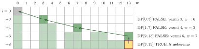
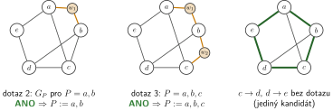
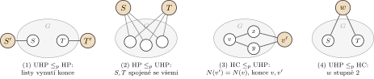

11.8 Úlohy navíc¶
Úlohy pokrývají látku celé kapitoly: důkazy NP-úplnosti číselných a grafových problémů (typ 4 testu, oddíly 11.1 a 11.4), self-redukci s orákulem pro \(\href{ch-cisla-ciselne-problemy.html#prob-partition}{\class{woo-pk-prob-partition}{\prob{Partition}}}\) (typ 2), model ILP (typ 3, oddíl 11.2) a dynamické programování jako na cvičení. Úloha 11.8 navíc procvičuje rozdíl mezi slabou a silnou NP-úplností. Pododdíl 11.8.4 přidává osm úloh ze sbírky jiného předmětu: self-redukci hamiltonovské kružnice, redukce mezi hamiltonovskými problémy a důkazy NP-úplnosti \(\href{../ch-ts/ch-ts-optimalizacni-vs-rozhodovaci-problemy.html#prob-tsp}{\class{woo-pk-prob-tsp}{\prob{TSP}}}\), 0/1 celočíselného programování, batohu, rozvrhování a kostry s omezeným stupněm.
Neoficiální úlohy
Úlohy v tomto oddílu nejsou oficiální zadání předmětu. Jsou to procvičovací úlohy navíc k látce kapitoly; všechny tabulky, počty a příklady jsou spočítané programem a každá redukce, self-redukce, model ILP i algoritmus byly ověřeny hrubou silou na malých instancích (u hamiltonovských problémů na všech grafech s nejvýše 6 vrcholy, u číselných problémů na tisících náhodných instancí, model ILP z úlohy 11.2 řešičem proti hrubé síle), vždy s odpověďmi \(\ANO\) i \(\NE\). Úlohy 11.9–11.16 ze sbírky jsou ověřené stejně: hamiltonovské redukce, self-redukce a kostry na všech grafech s nejvýše 5 vrcholy a stovkách náhodných grafů s 6–7 vrcholy, číselné redukce a model \(\href{#un-11-12}{\class{woo-pk-pojem-01-ilp}{\prob{0-1 ILP}}}\) na tisících náhodných malých instancí.
11.8.1 Rozcvička¶
Úloha 11.1 (DP pro Subset Sum a zpětný průchod)
Jsou dána čísla \(a_1=3\), \(a_2=4\), \(a_3=6\), \(a_4=8\) a cíl \(T=13\).
- Vyplňte tabulku \(\mathrm{DP}[i,w]\) z věty 11.12 pro \(i=0,\dots,4\) a \(w=0,\dots,13\).
- Zpětným průchodem tabulkou najděte podmnožinu se součtem \(13\). Napište pravidlo, podle kterého se v každém kroku rozhodujete, a zdůvodněte, proč průchod vždy skončí v políčku \((0,0)\).
- Pro která \(w\le13\) je odpověď \(\NE\)? Kolik políček má tabulka a proč z toho neplyne polynomiální algoritmus?
Řešení
a) Tabulka. \(\mathrm{DP}[i,w]=\mathrm{TRUE}\), právě když z prvních \(i\) čísel lze poskládat přesně součet \(w\). Podle rekurence \(\mathrm{DP}[i,w]=\mathrm{DP}[i-1,w]\lor\mathrm{DP}[i-1,w-a_i]\) vznikne množina TRUE-políček řádku \(i\) sjednocením množiny z řádku \(i-1\) a téže množiny posunuté o \(a_i\) (bereme jen součty \(\le13\)):
- \(i=0\): \(\{0\}\),
- \(i=1\) (\(a_1=3\)): \(\{0\}\cup\{3\}=\{0,3\}\),
- \(i=2\) (\(a_2=4\)): \(\{0,3\}\cup\{4,7\}=\{0,3,4,7\}\),
- \(i=3\) (\(a_3=6\)): \(\{0,3,4,7\}\cup\{6,9,10,13\}=\{0,3,4,6,7,9,10,13\}\),
- \(i=4\) (\(a_4=8\)): posunutím o 8 vzniknou součty \(8,11,12\) (ostatní jsou větší než 13), tedy \(\{0,3,4,6,7,8,9,10,11,12,13\}\).
\(\mathrm{DP}[4,13]=\mathrm{TRUE}\), odpověď je \(\ANO\).

Tabulka \(\mathrm{DP}\) (zeleně TRUE) a zpětný průchod z políčka \((4,13)\), čtený zdola nahoru. Šikmá šipka = číslo bereme (posun o \(a_i\) sloupců doleva), svislá = nebereme. Všimni si: průchod skončí v \((0,0)\).
b) Zpětný průchod. Stojíme v políčku \((i,w)\) s hodnotou TRUE. Je-li \(\mathrm{DP}[i-1,w]=\mathrm{TRUE}\), součet \(w\) jde poskládat i bez \(a_i\): číslo nebereme a přejdeme do \((i-1,w)\). Jinak podle rekurence musí být \(w\ge a_i\) a \(\mathrm{DP}[i-1,w-a_i]=\mathrm{TRUE}\): číslo \(a_i\) vezmeme a přejdeme do \((i-1,w-a_i)\). V obou případech je nové políčko opět TRUE (invariant). V řádku \(0\) je TRUE jen \(\mathrm{DP}[0,0]\), takže průchod skončí v \((0,0)\); součet vzatých čísel je pak přesně \(T-0=T\).
- \((4,13)\): \(\mathrm{DP}[3,13]=\mathrm{TRUE}\) \(\Rightarrow\) \(a_4=8\) nebereme, jdeme do \((3,13)\).
- \((3,13)\): \(\mathrm{DP}[2,13]=\mathrm{FALSE}\) \(\Rightarrow\) bereme \(a_3=6\), jdeme do \((2,7)\).
- \((2,7)\): \(\mathrm{DP}[1,7]=\mathrm{FALSE}\) \(\Rightarrow\) bereme \(a_2=4\), jdeme do \((1,3)\).
- \((1,3)\): \(\mathrm{DP}[0,3]=\mathrm{FALSE}\) \(\Rightarrow\) bereme \(a_1=3\), jdeme do \((0,0)\).
Výsledek: \(\{a_1,a_2,a_3\}\), \(3+4+6=13\). (Je to jediná podmnožina se součtem 13.) Stejně se vypisují vybrané předměty u \(\href{ch-cisla-ciselne-problemy.html#prob-knapsack}{\class{woo-pk-prob-knapsack}{\prob{Knapsack}}}\)u v úloze Cvičení 5.2.
c) Odpovědi \(\NE\) a velikost tabulky. V posledním řádku chybí \(w\in\{1,2,5\}\): pro tyto cíle je odpověď \(\NE\), pro všechna ostatní \(w\le13\) je \(\ANO\). Tabulka má \((n+1)(T+1)=5\cdot14=70\) políček, každé spočítáme v \(O(1)\), čas je \(O(n\cdot T)\). To je polynom v hodnotě \(T\), ne v délce vstupu: \(T\) s \(k\) bity může být až \(2^k-1\), tabulka má pak až \(n\cdot2^k\) políček. Algoritmus je jen pseudopolynomiální (definice 11.13).
Úloha 11.2 (balíky do dodávek jako ILP)
Přepravní firma má \(n\) balíků s kladnými hmotnostmi \(s_1,\dots,s_n\in\N\) a dostatek stejných dodávek s nosností \(C\in\N\). Každý balík pojede právě jednou dodávkou a náklad žádné dodávky nesmí přesáhnout \(C\).
- Formulujte jako celočíselný lineární program úlohu minimalizovat počet použitých dodávek. Uveďte proměnné a jejich význam, omezení (u každé skupiny, co zajišťuje), účelovou funkci a velikost programu.
- Navíc je dána množina \(K\) konfliktních dvojic balíků \(\{i,k\}\), které nesmí jet stejnou dodávkou. Upravte model.
- Ověřte model na balících \(4,4,3,3,2\) a \(C=8\), bez konfliktů a s konfliktem mezi oběma balíky o hmotnosti 4.
Řešení
Pozorování. Stačí \(n\) dodávek: je-li \(s_i\le C\) pro všechna \(i\), pojede každý balík zvlášť. Dodávky proto očíslujeme \(j=1,\dots,n\). (Má-li některý balík \(s_i>C\), úloha řešení nemá a model níže je nepřípustný, jak má být.)
a) Proměnné.
- \(x_{i,j}\in\{0,1\}\) pro balík \(i\) a dodávku \(j\): \(x_{i,j}=1\), právě když balík \(i\) jede dodávkou \(j\);
- \(y_j\in\{0,1\}\) pro dodávku \(j\): \(y_j=1\), právě když se dodávka \(j\) použije.
Omezení.
- Každý balík jede právě jednou dodávkou: \(\displaystyle\sum_{j=1}^{n}x_{i,j}=1\) pro každé \(i\) (vzor „jedna z možností“ jako u barvení, redukce 3-Coloring ≤ₚ ILP).
- Nosnost, a jen použité dodávky: \(\displaystyle\sum_{i=1}^{n}s_i\,x_{i,j}\le C\,y_j\) pro každé \(j\). Pro \(y_j=1\) je to nosnost, pro \(y_j=0\) musí být levá strana \(0\), takže nepoužitá dodávka nic neveze (hmotnosti jsou kladné).
Účelová funkce: \(\min\ \sum_{j=1}^{n}y_j\).
Správnost. (\(\Rightarrow\)) Rozdělení balíků do \(d\) dodávek, které nepřetíží žádnou, dá přípustné řešení s hodnotou \(d\): dodávky očíslujeme \(1,\dots,d\), položíme \(x_{i,j}=1\) podle rozdělení a \(y_j=1\) právě pro \(j\le d\). (\(\Leftarrow\)) Z přípustného řešení přečteme rozdělení: balík \(i\) jede tou dodávkou \(j\), kde \(x_{i,j}=1\) (právě jedna podle omezení 1); podle omezení 2 jezdí jen dodávky s \(y_j=1\) a nejsou přetížené. Použitých dodávek je nejvýše \(\sum_j y_j\), minimalizace pak stlačí \(\sum_j y_j\) přesně na jejich počet. Optima se tedy shodují.
Velikost. \(n^2+n\) proměnných a \(n+n=2n\) omezení (bez podmínek oboru \(\{0,1\}\)).
Volitelné zlepšení. Dodávky jsou zaměnitelné, takže každé řešení má mnoho kopií lišících se jen očíslováním. Omezení \(y_j\ge y_{j+1}\) (\(j=1,\dots,n-1\)) optimum nezmění (použité dodávky lze přečíslovat na \(1,\dots,d\)) a řešiči ušetří práci; není ale nutné.
b) Konflikty. Pro každou dvojici \(\{i,k\}\in K\) a každou dodávku \(j\) přidáme
Nejvýše jeden z balíků \(i,k\) tedy jede dodávkou \(j\) – stejná nerovnice jako „konce hrany nemají stejnou barvu“ v redukci Redukce: 3-Coloring ≤ₚ ILP. Přibude \(|K|\cdot n\) omezení; korespondence z a) platí beze změny, jen přípustná rozdělení jsou navíc ta bez konfliktních dvojic ve stejné dodávce.
c) Příklad. Celková hmotnost je \(16=2\cdot8\), takže jsou potřeba aspoň dvě dodávky. Bez konfliktů stačí: \(\{4,4\}\) a \(\{3,3,2\}\), optimum \(2\) (např. \(x_{1,1}=x_{2,1}=1\), \(x_{3,2}=x_{4,2}=x_{5,2}=1\), \(y_1=y_2=1\)). S konfliktem mezi balíky 1 a 2 by při dvou dodávkách musely být obě plné (součet \(16\)), a dodávka s balíkem 1 by potřebovala doplnit \(4\) z balíků \(3,3,2\) – to nejde. Optimum je \(3\), např. \(\{4,3\}\), \(\{4,3\}\), \(\{2\}\). (Obě optima jsme ověřili řešičem ILP na modelu i hrubou silou přes všechna rozdělení.)
Poznámka. Rozhodovací verze této úlohy je \(\href{ch-cisla-ciselne-problemy.html#prob-binpacking}{\class{woo-pk-prob-binpacking}{\prob{Bin Packing}}}\) (problém 11.17), který je silně NP-úplný (redukce 3-Partition ≤ₚ Bin Packing). Polynomiální algoritmus tedy nečekáme a ILP s řešičem je rozumná cesta (podrobněji kapitola 15).
Srovnání s ukázkovým testem. Model má stejnou kostru jako úloha 3: Formulace jako ILP [6 bodů] (zkoušky do termínů s konflikty). Liší se kapacitou (tam se počítají zkoušky v termínu, tady se sčítají hmotnosti, proto koeficienty \(s_i\) v omezení 2) a tím, že počet dodávek není daný – stačí jich \(n\).
11.8.2 Základní úlohy¶
Úloha 11.3 (hamiltonovská cesta a kružnice jsou stejně těžké)
Uvažujme neorientované grafy. \(\href{#un-11-3}{\class{woo-pk-pojem-hp}{\prob{HP}}}\): má graf \(G\) hamiltonovskou cestu (cestu, která navštíví každý vrchol právě jednou; konce jsou libovolné)? \(\href{ch-cisla-hamiltonovska-cesta.html#ch-cisla-dhp-hc}{\class{woo-pk-pojem-hc}{\prob{HC}}}\): má graf \(G\) hamiltonovskou kružnici (kružnici přes všechny vrcholy; pro grafy s méně než 3 vrcholy je odpověď \(\NE\))?
Dokažte \(\href{#un-11-3}{\class{woo-pk-pojem-hp}{\prob{HP}}}\mathrel{\href{../ch-redukce/ch-redukce-jak-porovnat-slozitost-dvou-problemu.html#def-redukce}{\class{woo-pk-def-redukce}{\redp}}}\href{ch-cisla-hamiltonovska-cesta.html#ch-cisla-dhp-hc}{\class{woo-pk-pojem-hc}{\prob{HC}}}\) i \(\href{ch-cisla-hamiltonovska-cesta.html#ch-cisla-dhp-hc}{\class{woo-pk-pojem-hc}{\prob{HC}}}\mathrel{\href{../ch-redukce/ch-redukce-jak-porovnat-slozitost-dvou-problemu.html#def-redukce}{\class{woo-pk-def-redukce}{\redp}}}\href{#un-11-3}{\class{woo-pk-pojem-hp}{\prob{HP}}}\). Nápověda: v první redukci přidejte jeden vrchol, ve druhé jeden vrchol zdvojte a přidejte dva listy.
Řešení
Redukce: \(\href{#un-11-3}{\class{woo-pk-pojem-hp}{\prob{HP}}}\mathrel{\href{../ch-redukce/ch-redukce-jak-porovnat-slozitost-dvou-problemu.html#def-redukce}{\class{woo-pk-def-redukce}{\redp}}}\href{ch-cisla-hamiltonovska-cesta.html#ch-cisla-dhp-hc}{\class{woo-pk-pojem-hc}{\prob{HC}}}\), graf \(G\) \(\mapsto\) \(G^+=G+w\) (nový vrchol \(w\) spojený se všemi vrcholy); a \(\href{ch-cisla-hamiltonovska-cesta.html#ch-cisla-dhp-hc}{\class{woo-pk-pojem-hc}{\prob{HC}}}\mathrel{\href{../ch-redukce/ch-redukce-jak-porovnat-slozitost-dvou-problemu.html#def-redukce}{\class{woo-pk-def-redukce}{\redp}}}\href{#un-11-3}{\class{woo-pk-pojem-hp}{\prob{HP}}}\), graf \(G\) \(\mapsto\) \(G'\) (kopie \(v'\) jednoho vrcholu \(v\) se stejnými sousedy, list \(s\) u \(v\) a list \(t\) u \(v'\)).
Část 1: \(\href{#un-11-3}{\class{woo-pk-pojem-hp}{\prob{HP}}}\mathrel{\href{../ch-redukce/ch-redukce-jak-porovnat-slozitost-dvou-problemu.html#def-redukce}{\class{woo-pk-def-redukce}{\redp}}}\href{ch-cisla-hamiltonovska-cesta.html#ch-cisla-dhp-hc}{\class{woo-pk-pojem-hc}{\prob{HC}}}\).
- Konstrukce. Pro \(G=(V,E)\) s \(n\) vrcholy a \(m\) hranami: je-li \(n=1\), vydáme pevnou \(\ANO\)-instanci \(K_3\) (jeden vrchol hamiltonovskou cestu má, ale \(G+w=K_2\) by kružnici neměl). Jinak \(G^+=(V\cup\{w\},\ E\cup\{\{w,u\}: u\in V\})\).
- Polynomialita. \(G^+\) má \(n+1\) vrcholů a \(m+n\) hran, sestrojíme ho v lineárním čase.
- (\(\Rightarrow\)) Je-li \(u_1,\dots,u_n\) hamiltonovská cesta v \(G\) (\(n\ge2\)), pak \(w,u_1,\dots,u_n,w\) je kružnice v \(G^+\): hrany \(\{u_i,u_{i+1}\}\) jsou z \(G\), hrany \(\{w,u_1\}\) a \(\{u_n,w\}\) jsme přidali. Má \(n+1\ge3\) vrcholů a projde všechny.
- (\(\Leftarrow\)) Hamiltonovská kružnice v \(G^+\) prochází i vrcholem \(w\). Odebereme-li \(w\) a jeho dvě hrany na kružnici, zbude cesta přes všech \(n\) vrcholů \(V\), která používá jen hrany mezi vrcholy \(V\), tedy hrany \(G\). To je hamiltonovská cesta v \(G\).
Část 2: \(\href{ch-cisla-hamiltonovska-cesta.html#ch-cisla-dhp-hc}{\class{woo-pk-pojem-hc}{\prob{HC}}}\mathrel{\href{../ch-redukce/ch-redukce-jak-porovnat-slozitost-dvou-problemu.html#def-redukce}{\class{woo-pk-def-redukce}{\redp}}}\href{#un-11-3}{\class{woo-pk-pojem-hp}{\prob{HP}}}\).
- Konstrukce. Pro \(n<3\) je odpověď \(\NE\) a vydáme pevnou \(\NE\)-instanci, hvězdu \(K_{1,3}\) (má tři listy, cesta ale jen dva konce). Pro \(n\ge3\) zvolíme libovolný vrchol \(v\) a přidáme tři nové vrcholy: \(v'\) spojený se všemi sousedy \(v\) (ne s \(v\) samotným), list \(s\) s hranou \(\{s,v\}\) a list \(t\) s hranou \(\{t,v'\}\).
- Polynomialita. \(G'\) má \(n+3\) vrcholů a \(m+\deg(v)+2\) hran.
- (\(\Rightarrow\)) Nechť \(v,u_1,\dots,u_{n-1},v\) je hamiltonovská kružnice v \(G\). Vrchol \(u_{n-1}\) je soused \(v\), tedy i soused \(v'\). Proto \(s,v,u_1,\dots,u_{n-1},v',t\) je cesta v \(G'\) a projde všech \(n+3\) vrcholů.
- (\(\Leftarrow\)) Nechť \(P\) je hamiltonovská cesta v \(G'\). Vrcholy \(s\) a \(t\) mají stupeň 1; vnitřní vrchol cesty potřebuje dva sousedy, takže \(s\) a \(t\) jsou oba konce \(P\). Jediný soused \(s\) je \(v\) a jediný soused \(t\) je \(v'\), cesta má tedy tvar \(s,v,w_1,\dots,w_{n-1},v',t\), kde \(w_1,\dots,w_{n-1}\) jsou všechny vrcholy \(V\setminus\{v\}\). Hrany \(\{v,w_1\}\) a \(\{w_i,w_{i+1}\}\) jsou hrany \(G\); \(w_{n-1}\) sousedí s \(v'\), podle konstrukce tedy i s \(v\). Proto \(v,w_1,\dots,w_{n-1},v\) je kružnice v \(G\) s \(n\ge3\) vrcholy – hamiltonovská.

Vlevo \(\href{ch-cisla-hamiltonovska-cesta.html#ch-cisla-dhp-hc}{\class{woo-pk-pojem-hc}{\prob{HC}}}\mathrel{\href{../ch-redukce/ch-redukce-jak-porovnat-slozitost-dvou-problemu.html#def-redukce}{\class{woo-pk-def-redukce}{\redp}}}\href{#un-11-3}{\class{woo-pk-pojem-hp}{\prob{HP}}}\) pro \(v=a\): oranžově nové vrcholy, \(a'\) má stejné sousedy jako \(a\) (tj. \(b\), \(e\)). Vpravo \(\href{#un-11-3}{\class{woo-pk-pojem-hp}{\prob{HP}}}\mathrel{\href{../ch-redukce/ch-redukce-jak-porovnat-slozitost-dvou-problemu.html#def-redukce}{\class{woo-pk-def-redukce}{\redp}}}\href{ch-cisla-hamiltonovska-cesta.html#ch-cisla-dhp-hc}{\class{woo-pk-pojem-hc}{\prob{HC}}}\): nový vrchol \(w\) je spojený se všemi. Zeleně hamiltonovská cesta, resp. kružnice.
Proč ne jednodušeji. Identita nefunguje ani jedním směrem: cesta \(a-b-c\) má hamiltonovskou cestu, ale ne kružnici. Ani „odeber vrchol \(v\) a hledej hamiltonovskou cestu v \(G-v\)“ nestačí: konce nalezené cesty nemusí sousedit s \(v\) (zpátky do \(v\) by se kružnice neuzavřela). Proto kopie \(v'\) a listy \(s,t\): listy vynutí, kde cesta začíná a končí, a \(v'\) zaručí, že poslední vrchol sousedí s \(v\).
Závěr. Oba problémy jsou v \(\href{../ch-np/ch-np-tridy-nedeterministicke-casove-slozitosti.html#def-ntime}{\class{woo-pk-def-ntime}{\NP}}\) (certifikát = pořadí vrcholů) a jsou na sebe navzájem polynomiálně převoditelné. Z NP-úplnosti jednoho z nich (oddíl 11.1) proto plyne NP-úplnost druhého.
Úloha 11.4 (Subset Sum se zápornými čísly)
Problém \(\href{#un-11-4}{\class{woo-pk-pojem-zero-subset-sum}{\prob{Zero Subset Sum}}}\). Vstup: celá čísla \(b_1,\dots,b_n\) (mohou být záporná; zapsaná binárně se znaménkem). Otázka: existuje neprázdná množina \(J\subseteq\{1,\dots,n\}\) se \(\sum_{i\in J}b_i=0\)?
Dokažte, že \(\href{#un-11-4}{\class{woo-pk-pojem-zero-subset-sum}{\prob{Zero Subset Sum}}}\) je NP-úplný. Proč je v zadání podstatné slovo „neprázdná“?
Řešení
Redukce: \(\href{ch-cisla-ciselne-problemy.html#prob-subsetsum}{\class{woo-pk-prob-subsetsum}{\prob{Subset Sum}}} \mathrel{\href{../ch-redukce/ch-redukce-jak-porovnat-slozitost-dvou-problemu.html#def-redukce}{\class{woo-pk-def-redukce}{\redp}}} \href{#un-11-4}{\class{woo-pk-pojem-zero-subset-sum}{\prob{Zero Subset Sum}}}\), instance \((a_1,\dots,a_n;\ T)\) \(\mapsto\) \((a_1,\dots,a_n,\ -T)\).
1. Problém je v \(\href{../ch-np/ch-np-tridy-nedeterministicke-casove-slozitosti.html#def-ntime}{\class{woo-pk-def-ntime}{\NP}}\). Certifikát je neprázdná množina \(J\) (\(n\) bitů). Ověříme, že je neprázdná, a sečteme \(\le n\) čísel; sčítání binárních čísel je polynomiální v délce jejich zápisu.
2. Konstrukce. Instance \(\href{ch-cisla-ciselne-problemy.html#prob-subsetsum}{\class{woo-pk-prob-subsetsum}{\prob{Subset Sum}}}\) (problém 11.8) má kladná celá čísla \(a_1,\dots,a_n\) a cíl \(T\). Vydáme čísla \(b_i=a_i\) pro \(i\le n\) a navíc \(b_{n+1}=-T\). (Znaménko \(T\) nehraje roli: pro \(T=0\) je \(b_{n+1}=0\), pro \(T<0\) je \(b_{n+1}>0\) a důkaz níže platí beze změny.)
3. Polynomialita. Jedno číslo navíc, se stejným počtem bitů jako \(T\) plus znaménko; lineární čas.
4. (\(\Rightarrow\)) Nechť \(\sum_{i\in I}a_i=T\). Pak \(J=I\cup\{n+1\}\) je neprázdná (obsahuje \(n+1\)) a \(\sum_{i\in J}b_i=T-T=0\).
5. (\(\Leftarrow\)) Nechť \(J\neq\emptyset\) má součet 0. Kdyby \(n+1\notin J\), byla by \(J\) neprázdná množina kladných čísel \(a_i\) se součtem aspoň 1 – spor. Tedy \(n+1\in J\) a pro \(I=J\setminus\{n+1\}\) platí \(\sum_{i\in I}a_i-T=0\), tj. \(\sum_{i\in I}a_i=T\).
6. Závěr. \(\href{ch-cisla-ciselne-problemy.html#prob-subsetsum}{\class{woo-pk-prob-subsetsum}{\prob{Subset Sum}}}\) je NP-úplný, tedy \(\href{#un-11-4}{\class{woo-pk-pojem-zero-subset-sum}{\prob{Zero Subset Sum}}}\) je NP-těžký a podle bodu 1 NP-úplný.
Příklad. \((5,8,11;\ 13)\) \(\mapsto\) \((5,8,11,-13)\); \(5+8=13\) odpovídá \(5+8-13=0\). Naopak \((5,8,11;\ 14)\) \(\mapsto\) \((5,8,11,-14)\): součty podmnožin čísel \(5,8,11\) jsou \(0,5,8,11,13,16,19,24\), číslo 14 mezi nimi není, a nulový součet tedy nemá ani vyrobená instance.
Proč „neprázdná“. Prázdná množina má součet 0 vždy; bez tohoto slova by odpověď byla pro každý vstup \(\ANO\) a problém by byl triviální. V bodě 5 jsme slovo použili přesně jednou: vylučuje \(J=\emptyset\), které by nedávalo žádnou informaci. Druhá použitá vlastnost je kladnost čísel \(a_i\) ze zadání \(\href{ch-cisla-ciselne-problemy.html#prob-subsetsum}{\class{woo-pk-prob-subsetsum}{\prob{Subset Sum}}}\)u.
Úloha 11.5 (tři loupežníci)
Problém \(\href{#un-11-5}{\class{woo-pk-pojem-3way-partition}{\prob{3-Way Partition}}}\). Vstup: kladná celá čísla \(a_1,\dots,a_n\). Otázka: lze je rozdělit do tří skupin se stejným součtem?
Dokažte, že problém je NP-úplný, redukcí z \(\href{ch-cisla-ciselne-problemy.html#prob-partition}{\class{woo-pk-prob-partition}{\prob{Partition}}}\) (problém 11.9). (Nezaměňujte s \(\href{ch-cisla-ciselne-problemy.html#prob-3partition}{\class{woo-pk-prob-3partition}{\prob{3-Partition}}}\) z definice 11.15 – rozdíl je předmětem úlohy 11.7.)
Řešení
Redukce: \(\href{ch-cisla-ciselne-problemy.html#prob-partition}{\class{woo-pk-prob-partition}{\prob{Partition}}} \mathrel{\href{../ch-redukce/ch-redukce-jak-porovnat-slozitost-dvou-problemu.html#def-redukce}{\class{woo-pk-def-redukce}{\redp}}} \href{#un-11-5}{\class{woo-pk-pojem-3way-partition}{\prob{3-Way Partition}}}\), instance \((a_1,\dots,a_n)\) \(\mapsto\) \((a_1,\dots,a_n,\ S/2)\), kde \(S=\sum_i a_i\).
1. Problém je v \(\href{../ch-np/ch-np-tridy-nedeterministicke-casove-slozitosti.html#def-ntime}{\class{woo-pk-def-ntime}{\NP}}\). Certifikát je přiřazení čísel do skupin (2 bity na číslo). Sečteme tři součty a porovnáme je, polynomiálně v délce binárního zápisu.
2. Konstrukce. Je-li \(S\) liché, \(\href{ch-cisla-ciselne-problemy.html#prob-partition}{\class{woo-pk-prob-partition}{\prob{Partition}}}\) má odpověď \(\NE\) a vydáme pevnou \(\NE\)-instanci, jediné číslo \(1\) (součet 1 nejde rozdělit na tři stejné celočíselné části). Jinak přidáme vyrovnávací číslo \(b=S/2\). Nový součet je \(S+S/2=3S/2\), každá skupina tedy musí mít přesně \(S/2\).
3. Polynomialita. Spočítáme \(S\) (sčítání \(n\) binárních čísel) a připíšeme jedno číslo s nejvýše tolika bity, kolik má \(S\); to je \(O(\log n)\) bitů nad nejdelší vstupní číslo.
4. (\(\Rightarrow\)) Nechť \(I\) a doplněk \(\bar I\) mají oba součet \(S/2\). Skupiny \(I\), \(\bar I\) a \(\{b\}\) mají všechny součet \(S/2\).
5. (\(\Leftarrow\)) Nechť jsou skupiny tři, každá se součtem \(S/2\). Skupina s číslem \(b=S/2\) má součet vyčerpaný už jím, a protože všechna \(a_i\) jsou kladná, žádné další číslo v ní není. Zbylé dvě skupiny tedy obsahují právě čísla \(a_1,\dots,a_n\) a mají součet \(S/2\) – to je rozdělení pro \(\href{ch-cisla-ciselne-problemy.html#prob-partition}{\class{woo-pk-prob-partition}{\prob{Partition}}}\).
6. Závěr. \(\href{ch-cisla-ciselne-problemy.html#prob-partition}{\class{woo-pk-prob-partition}{\prob{Partition}}}\) je NP-úplný, tedy \(\href{#un-11-5}{\class{woo-pk-pojem-3way-partition}{\prob{3-Way Partition}}}\) je NP-těžký a podle bodu 1 NP-úplný.

Příklad: \(\href{ch-cisla-ciselne-problemy.html#prob-partition}{\class{woo-pk-prob-partition}{\prob{Partition}}}\) pro \(2,3,4,5,8\) má řešení \(\{3,8\}\), \(\{2,4,5\}\); vyrobená instance je \(2,3,4,5,8,11\). Všimni si: stejný trik „vyrovnávacího čísla“ jako v redukci \(\prob{Subset Sum}\redp\prob{Partition}\).
Úloha 11.6 (rozdělení na poloviny pomocí orákula)
Máte k dispozici orákulum, které pro zadaná kladná celá čísla \(b_1,\dots,b_r\) v jednom kroku odpoví, zda je lze rozdělit do dvou skupin se stejným součtem (problém \(\href{ch-cisla-ciselne-problemy.html#prob-partition}{\class{woo-pk-prob-partition}{\prob{Partition}}}\), definice 11.9).
- Pomocí orákula najděte pro čísla \(a_1,\dots,a_n\) rozdělení indexů na \(A\cup B\) se \(\sum_{i\in A}a_i=\sum_{i\in B}a_i\), nebo oznamte, že neexistuje. Dokažte správnost a odhadněte počet dotazů.
- Proč nefunguje postup z typové úlohy Typová úloha 2.4 [6 bodů] (čísla po jednom vyškrtávat)?
- Spusťte postup na čísla \(5,3,4,2,6,4\).
Řešení
Redukce s orákulem: \(\href{ch-cisla-ciselne-problemy.html#prob-partition}{\class{woo-pk-prob-partition}{\prob{Partition}}}\) – nalezení rozdělení \(\to\) \(\href{ch-cisla-ciselne-problemy.html#prob-partition}{\class{woo-pk-prob-partition}{\prob{Partition}}}\) – rozhodovací verze. Jak: čísla po jednom zkoušíme sečíst s „blokem“, který obsahuje \(a_1\); zůstane-li odpověď \(\ANO\), budou ve stejné skupině.
Značení: \(O(b_1,\dots,b_r)\) je odpověď orákula. Seznam čísel, v němž je \(b\) součet čísel \(a_i\) s indexy v množině \(A\) a zbylá čísla jsou jednotlivá \(a_i\), nazveme stažená instance.
Tvrzení. Rozdělení stažené instance odpovídají vzájemně jednoznačně rozdělením čísel \(a_1,\dots,a_n\), v nichž jsou všechny indexy z \(A\) ve stejné skupině (číslo \(b\) je jejich součet a skupina se součtem se nemění).
a) Algoritmus.
- Zeptej se \(O(a_1,\dots,a_n)\). Při \(\NE\) rozdělení neexistuje – konec.
- \(A:=\{1\}\), \(b:=a_1\), \(B:=\emptyset\). Pro \(i=2,\dots,n\): zeptej se na staženou instanci, v níž je \(a_i\) přičteno k \(b\), tj. na čísla \(b+a_i\) a \(a_j\) pro \(j\notin A\cup\{i\}\). Při \(\ANO\) polož \(A:=A\cup\{i\}\), \(b:=b+a_i\); při \(\NE\) polož \(B:=B\cup\{i\}\).
- Vydej \((A,B)\).
Invariant: stažená instance s blokem \(A\) (čísla \(b\) a \(a_j\), \(j\notin A\)) má rozdělení. Na začátku je to vstup a platí podle prvního dotazu; krok s \(\ANO\) ho zachová podle odpovědi orákula, krok s \(\NE\) staženou instanci nemění.
Proč je výstup rozdělení. Podle invariantu má výsledná stažená instance rozdělení; číslo \(b\) je v něm v jedné skupině. Vezměme \(i\in B\). Když jsme \(i\) testovali, měla tehdejší stažená instance (s blokem \(A_i\subseteq A\)) odpověď \(\NE\) po přičtení \(a_i\): podle tvrzení žádné rozdělení čísel \(a_1,\dots,a_n\) nemá \(A_i\cup\{i\}\) v jedné skupině. Rozdělení výsledné instance je rozdělení čísel \(a_1,\dots,a_n\) s celým \(A\supseteq A_i\) v jedné skupině, takže \(i\) musí být v druhé. To platí pro každé \(i\in B\), výsledné rozdělení je tedy přesně \(A\) proti \(B\) a obě skupiny mají stejný součet.
Počet dotazů: \(1+(n-1)=n\). Každý dotaz má nejvýše \(n\) čísel, každé nejvýše \(S=\sum_i a_i\), tedy s nejvýše o \(\lceil\log_2 n\rceil\) bitů víc než vstupní čísla – dotazy jsou polynomiálně velké. (Zlepšení: jakmile je \(b=S/2\), patří všechna zbylá čísla do \(B\) bez dalších dotazů.)
b) Proč nevyškrtávat. U \(\href{ch-cisla-ciselne-problemy.html#prob-subsetsum}{\class{woo-pk-prob-subsetsum}{\prob{Subset Sum}}}\) je cíl \(T\) pevný a vyškrtnutím čísla, které v řešení není, se odpověď nezmění. \(\href{ch-cisla-ciselne-problemy.html#prob-partition}{\class{woo-pk-prob-partition}{\prob{Partition}}}\) cíl nemá, je to vždy „polovina součtu“, a ta se vyškrtnutím posune. Zbytek po vyškrtnutí jednoho čísla má navíc často lichý součet a odpověď \(\NE\), i když původní rozdělení existuje (v příkladu níže: bez čísla \(5\) zbude součet \(19\)). Vyškrtávání proto nic neříká; místo toho kódujeme do instance, že dvě čísla jsou ve stejné skupině – sečtením.
c) Běh. Čísla \(5,3,4,2,6,4\), součet \(S=24\), polovina \(12\).
| dotaz | odpověď | akce |
|---|---|---|
| \(O(5,3,4,2,6,4)\) | \(\ANO\) | rozdělení existuje |
| \(O(8,4,2,6,4)\) (\(5+3\)) | \(\ANO\) | \(A=\{5,3\}\), \(b=8\) |
| \(O(12,2,6,4)\) (\(8+4\)) | \(\ANO\) | \(A=\{5,3,4\}\), \(b=12\) |
| \(O(14,6,4)\) (\(12+2\)) | \(\NE\) | \(2\in B\) |
| \(O(18,2,4)\) (\(12+6\)) | \(\NE\) | \(6\in B\) |
| \(O(16,2,6)\) (\(12+4\)) | \(\NE\) | \(4\in B\) |
Výsledek \(A=\{5,3,4\}\), \(B=\{2,6,4\}\), oba součty \(12\), po \(6\) dotazech. Se zlepšením z a) by stačily první tři dotazy: po třetím je \(b=12=S/2\).
11.8.3 Těžší úlohy¶
Úloha 11.7 (pevný počet skupin: tři loupežníci, dva koše)
- Navrhněte dynamické programování, které rozhodne \(\href{#un-11-5}{\class{woo-pk-pojem-3way-partition}{\prob{3-Way Partition}}}\) z úlohy 11.5 v čase \(O(n\cdot S^2)\), kde \(S=\sum_i a_i\). Je problém slabě, nebo silně NP-úplný?
- Proč stejný nápad nedá polynomiální algoritmus pro unárně zapsaný \(\href{ch-cisla-ciselne-problemy.html#prob-3partition}{\class{woo-pk-prob-3partition}{\prob{3-Partition}}}\)?
- \(\href{ch-cisla-ciselne-problemy.html#prob-binpacking}{\class{woo-pk-prob-binpacking}{\prob{Bin Packing}}}\) (problém 11.17) s pevným počtem košů \(q=2\): vstupem jsou jen velikosti předmětů a kapacita \(B\). Je NP-úplný? Slabě, nebo silně? Porovnejte s redukcí \(\prob{3-Partition}\redp\prob{Bin Packing}\).
Řešení
Redukce: \(\href{ch-cisla-ciselne-problemy.html#prob-partition}{\class{woo-pk-prob-partition}{\prob{Partition}}} \mathrel{\href{../ch-redukce/ch-redukce-jak-porovnat-slozitost-dvou-problemu.html#def-redukce}{\class{woo-pk-def-redukce}{\redp}}} \href{ch-cisla-ciselne-problemy.html#prob-binpacking}{\class{woo-pk-prob-binpacking}{\prob{Bin Packing}}}\) se dvěma koši, instance \((a_1,\dots,a_n)\) \(\mapsto\) předměty \(a_1,\dots,a_n\), kapacita \(B=S/2\), \(q=2\) (část c).
a) DP pro tři skupiny. Není-li \(S\) dělitelné 3, odpověď je \(\NE\). Jinak \(K=S/3\) a pro \(i=0,\dots,n\) a \(0\le s_1,s_2\le K\) definujeme
Základ: \(\mathrm{DP}[0,0,0]=\mathrm{TRUE}\), ostatní \(\mathrm{DP}[0,\cdot,\cdot]=\mathrm{FALSE}\). Číslo \(a_i\) dáme do skupiny 3, 1, nebo 2:
(druhý, resp. třetí člen jen pro \(s_1\ge a_i\), resp. \(s_2\ge a_i\)). Odpověď je \(\mathrm{DP}[n,K,K]\): skupiny 1 a 2 mají součet \(K\) a skupina 3 zbytek \(S-2K=K\).
Správnost. Indukcí podle \(i\): každé rozdělení prvních \(i\) čísel vznikne z rozdělení prvních \(i-1\) čísel přidáním \(a_i\) do jedné ze tří skupin, a to rekurence probere. Omezení \(s_1,s_2\le K\) nic neztratí: součty skupin přidáváním čísel jen rostou, takže v rozdělení, které na konci dá \(K,K,K\), mají skupiny 1 a 2 po celou dobu součet nejvýš \(K\). (Skupinu 3 hlídat nemusíme, na konci má součet \(S-2K=K\) automaticky.)
Čas. \((n+1)(K+1)^2\) políček po \(O(1)\), tedy \(O(n\cdot S^2)\). To je pseudopolynomiální čas: \(S\) může být až \(n\cdot2^k\) pro čísla s \(k\) bity. Spolu s úlohou 11.5 je \(\href{#un-11-5}{\class{woo-pk-pojem-3way-partition}{\prob{3-Way Partition}}}\) slabě NP-úplný (NP-úplný a s pseudopolynomiálním algoritmem; s unárně zapsanými čísly je v \(\href{../ch-cas/ch-cas-tridy-p-a-exp.html#def-tridy}{\class{woo-pk-def-tridy}{\PP}}\)).
b) Proč to nejde pro \(\href{ch-cisla-ciselne-problemy.html#prob-3partition}{\class{woo-pk-prob-3partition}{\prob{3-Partition}}}\). V \(\href{ch-cisla-ciselne-problemy.html#prob-3partition}{\class{woo-pk-prob-3partition}{\prob{3-Partition}}}\) je skupin \(q\) a jejich počet je součástí vstupu (roste s \(n=3q\)). Zobecněné DP by si muselo pamatovat součty \(q-1\) skupin, tedy až \((B+1)^{q-1}\) stavů – exponenciálně mnoho v \(q\), i když je \(B\) malé (unární zápis). DP výše je polynomiální jen proto, že počet skupin je konstanta 3. Že žádný jiný nápad nepomůže, říká věta 11.16: \(\href{ch-cisla-ciselne-problemy.html#prob-3partition}{\class{woo-pk-prob-3partition}{\prob{3-Partition}}}\) je silně NP-úplný, takže polynomiální algoritmus pro unární verzi by dal \(\href{../ch-cas/ch-cas-tridy-p-a-exp.html#def-tridy}{\class{woo-pk-def-tridy}{\PP}}=\href{../ch-np/ch-np-tridy-nedeterministicke-casove-slozitosti.html#def-ntime}{\class{woo-pk-def-ntime}{\NP}}\).
c) Bin Packing se dvěma koši. 1. V \(\href{../ch-np/ch-np-tridy-nedeterministicke-casove-slozitosti.html#def-ntime}{\class{woo-pk-def-ntime}{\NP}}\): certifikát je přiřazení předmětů do košů, sečteme zaplnění obou košů. 2. Konstrukce: pro liché \(S\) vydáme pevnou \(\NE\)-instanci (jeden předmět velikosti 2, \(B=1\)), jinak předměty \(a_i\) a \(B=S/2\). 3. Polynomialita: jedno dělení dvěma. 4. (\(\Rightarrow\)): obě poloviny rozdělení mají součet \(S/2\) a vejdou se. 5. (\(\Leftarrow\)): dva koše kapacity \(S/2\) pojmou celkem \(S\), jen když jsou oba přesně plné – obsahy košů jsou rozdělení pro \(\href{ch-cisla-ciselne-problemy.html#prob-partition}{\class{woo-pk-prob-partition}{\prob{Partition}}}\). 6. Závěr: \(\href{ch-cisla-ciselne-problemy.html#prob-binpacking}{\class{woo-pk-prob-binpacking}{\prob{Bin Packing}}}\) s \(q=2\) je NP-úplný. (Je to tentýž problém jako rozvrh na dva stroje z typové úlohy Typová úloha 4.3 [12 bodů] s termínem \(D=B\).)
Silně NP-úplný ale není (pokud \(\href{../ch-cas/ch-cas-tridy-p-a-exp.html#def-tridy}{\class{woo-pk-def-tridy}{\PP}}\neq\href{../ch-np/ch-np-tridy-nedeterministicke-casove-slozitosti.html#def-ntime}{\class{woo-pk-def-ntime}{\NP}}\)): množiny \(R_i\) dosažitelných zaplnění prvního koše (\(R_0=\{0\}\), \(R_i=R_{i-1}\cup\{r+a_i: r\in R_{i-1},\ r+a_i\le B\}\)) spočítáme v čase \(O(n\cdot B)\) a odpověď je \(\ANO\), právě když existuje \(r\in R_n\) se \(S-r\le B\) (zbytek se vejde do druhého koše). Je to pseudopolynomiální algoritmus, problém je tedy slabě NP-úplný.
Srovnání. Redukce \(\prob{3-Partition}\redp\prob{Bin Packing}\) dává silnou NP-těžkost jen díky tomu, že počet košů \(q\) je součástí vstupu. (nad rámec přednášky) Pro každé pevné \(q\) stačí DP přes zaplnění \(q-1\) košů v čase \(O(n\cdot q\cdot(B+1)^{q-1})\), pseudopolynomiálně.
Úloha 11.8 (rozvrh s časovými okny)
Problém \(\href{#un-11-8}{\class{woo-pk-pojem-rozvrh-s-okny}{\prob{Rozvrh s okny}}}\). Vstup: \(n\) úloh; úloha \(j\) má délku \(p_j\ge1\), čas uvolnění \(r_j\) a termín \(d_j\) (přirozená čísla zapsaná binárně). Otázka: lze úlohy rozvrhnout na jeden stroj, tj. zvolit začátky \(\sigma_j\) s \(r_j\le\sigma_j\) a \(\sigma_j+p_j\le d_j\), aby se žádné dva intervaly \([\sigma_j,\sigma_j+p_j)\) nepřekrývaly? (Úloha běží bez přerušení.)
- Dokažte, že problém je NP-úplný. Nápověda: převádějte z \(\href{ch-cisla-ciselne-problemy.html#prob-partition}{\class{woo-pk-prob-partition}{\prob{Partition}}}\); čísla jsou úlohy a jedna úloha navíc rozdělí čas na dvě poloviny.
- Dokažte, že je dokonce silně NP-těžký (definice 11.14). Nápověda: převádějte z \(\href{ch-cisla-ciselne-problemy.html#prob-3partition}{\class{woo-pk-prob-3partition}{\prob{3-Partition}}}\).
Řešení
Redukce: a) \(\href{ch-cisla-ciselne-problemy.html#prob-partition}{\class{woo-pk-prob-partition}{\prob{Partition}}} \mathrel{\href{../ch-redukce/ch-redukce-jak-porovnat-slozitost-dvou-problemu.html#def-redukce}{\class{woo-pk-def-redukce}{\redp}}} \href{#un-11-8}{\class{woo-pk-pojem-rozvrh-s-okny}{\prob{Rozvrh s okny}}}\), čísla \(a_1,\dots,a_n\) se součtem \(S\) \(\mapsto\) úlohy \((p,r,d)=(a_i,0,S+1)\) a „zarážka“ \((1,\ S/2,\ S/2+1)\); b) \(\href{ch-cisla-ciselne-problemy.html#prob-3partition}{\class{woo-pk-prob-3partition}{\prob{3-Partition}}} \mathrel{\href{../ch-redukce/ch-redukce-jak-porovnat-slozitost-dvou-problemu.html#def-redukce}{\class{woo-pk-def-redukce}{\redp}}} \href{#un-11-8}{\class{woo-pk-pojem-rozvrh-s-okny}{\prob{Rozvrh s okny}}}\), \((a_1,\dots,a_{3q};\ B)\) \(\mapsto\) úlohy \((a_i,0,H)\) a \(q-1\) zarážek, \(H=q(B+1)-1\).
a) 1. Problém je v \(\href{../ch-np/ch-np-tridy-nedeterministicke-casove-slozitosti.html#def-ntime}{\class{woo-pk-def-ntime}{\NP}}\). Certifikát jsou začátky \(\sigma_j\); každý je nejvýše \(\max_j d_j\), má tedy polynomiálně mnoho bitů. Ověříme \(r_j\le\sigma_j\), \(\sigma_j+p_j\le d_j\) a po seřazení podle \(\sigma_j\), že každá úloha skončí nejpozději v začátku následující: čas \(O(n\log n)\) operací s binárními čísly.
2. Konstrukce. Je-li \(S\) liché, vydáme pevnou \(\NE\)-instanci (jedna úloha s \(p=1\), \(r=0\), \(d=0\)). Jinak úlohy \(1,\dots,n\) s \(p_i=a_i\), \(r_i=0\), \(d_i=S+1\) a zarážku \(z\) s \(p_z=1\), \(r_z=S/2\), \(d_z=S/2+1\).
3. Polynomialita. \(n+1\) úloh, čísla nejvýše \(S+1\), tedy o \(O(\log n)\) bitů delší než vstupní; jedno sčítání a dělení dvěma.
Klíčové pozorování. Všechny úlohy musí běžet v intervalu \([0,S+1]\) délky \(S+1\) a jejich celková délka je také \(S+1\). Stroj tedy v žádném rozvrhu nestojí: interval je úlohami zaplněný beze zbytku. Zarážka může běžet jen v \([S/2,\ S/2+1)\).
4. (\(\Rightarrow\)) Nechť \(\sum_{i\in I}a_i=S/2=\sum_{i\notin I}a_i\). Úlohy z \(I\) pustíme za sebou od času \(0\) (skončí v \(S/2\)), pak zarážku v \([S/2,S/2+1)\) a pak úlohy mimo \(I\) za sebou (skončí v \(S/2+1+S/2=S+1\)). Všechna okna jsou dodržena.
5. (\(\Leftarrow\)) Nechť existuje rozvrh. Zarážka zabírá \([S/2,S/2+1)\) a ostatní úlohy se s ní nepřekrývají, každá tedy celá proběhne buď před \(S/2\), nebo po \(S/2+1\). Podle pozorování je interval \([0,S/2)\) zaplněný beze zbytku úlohami, které běží před zarážkou; jejich délky mají součet \(S/2\). Tyto úlohy tvoří jednu skupinu, ostatní druhou – obě mají součet \(S/2\).
6. Závěr. \(\href{ch-cisla-ciselne-problemy.html#prob-partition}{\class{woo-pk-prob-partition}{\prob{Partition}}}\) je NP-úplný, tedy \(\href{#un-11-8}{\class{woo-pk-pojem-rozvrh-s-okny}{\prob{Rozvrh s okny}}}\) je NP-těžký a podle bodu 1 NP-úplný.

Příklad: \(\href{ch-cisla-ciselne-problemy.html#prob-partition}{\class{woo-pk-prob-partition}{\prob{Partition}}}\) pro \(3,5,2,4\) (\(S=14\)) a rozvrh z bodu 4 pro rozdělení \(\{3,4\}\), \(\{5,2\}\). Zarážka \(z\) smí běžet jen v \([7,8)\). Všimni si: celková délka \(15\) se rovná délce okna \([0,15]\), takže stroj nikde nestojí a před zarážkou musí být přesně součet \(7\).
b) Silná NP-těžkost. Redukce a) to nedokazuje: \(\href{ch-cisla-ciselne-problemy.html#prob-partition}{\class{woo-pk-prob-partition}{\prob{Partition}}}\) je jen slabě NP-úplný a čísla \(S/2\), \(S+1\) mohou být exponenciálně velká vůči počtu bitů. Převedeme proto ze silně NP-úplného \(\href{ch-cisla-ciselne-problemy.html#prob-3partition}{\class{woo-pk-prob-3partition}{\prob{3-Partition}}}\) (věta 11.16): \(3q\) čísel se součtem \(qB\), každé ostře mezi \(B/4\) a \(B/2\).
Konstrukce. Horizont \(H=q(B+1)-1\). Úlohy \(i=1,\dots,3q\) s \(p_i=a_i\), \(r_i=0\), \(d_i=H\) a zarážky \(z_1,\dots,z_{q-1}\), kde \(z_j\) má \(p=1\), \(r=j(B+1)-1\), \(d=j(B+1)\). Zarážky zabírají časy \([B,B+1)\), \([2B+1,2B+2)\), … a mezi nimi zbude \(q\) „oken“ délky přesně \(B\).
(\(\Rightarrow\)) Trojice se součtem \(B\) pustíme po jedné do oken; každé okno zaplní přesně.
(\(\Leftarrow\)) Celková délka je \(qB+(q-1)=H\), takže stroj opět nestojí a každé okno délky \(B\) je zaplněné úlohami, které v něm celé běží (žádná nepřesahuje přes zarážku). Úlohy v jednom okně mají součet \(B\); protože každé číslo je ostře mezi \(B/4\) a \(B/2\), jsou to přesně tři čísla (dvě dají méně než \(B\), čtyři více). Okna dávají rozdělení na \(q\) trojic se součtem \(B\).
Proč silně. Největší číslo výstupu je \(H=q(B+1)-1\), tedy polynomiální vzhledem k počtu čísel a jejich hodnotám. Jsou-li čísla instance \(\href{ch-cisla-ciselne-problemy.html#prob-3partition}{\class{woo-pk-prob-3partition}{\prob{3-Partition}}}\) zapsaná unárně, je i výstup s čísly zapsanými unárně polynomiálně velký, takže \(\href{#un-11-8}{\class{woo-pk-pojem-rozvrh-s-okny}{\prob{Rozvrh s okny}}}\) zůstane NP-těžký i při unárním zápisu – je silně NP-úplný a pseudopolynomiální algoritmus pro něj neexistuje (pokud \(\href{../ch-cas/ch-cas-tridy-p-a-exp.html#def-tridy}{\class{woo-pk-def-tridy}{\PP}}\neq\href{../ch-np/ch-np-tridy-nedeterministicke-casove-slozitosti.html#def-ntime}{\class{woo-pk-def-ntime}{\NP}}\)). Redukce a) by to nedokázala: vychází ze slabě NP-úplného problému, a \(\href{ch-cisla-ciselne-problemy.html#prob-partition}{\class{woo-pk-prob-partition}{\prob{Partition}}}\) s unárně zapsanými čísly je v \(\href{../ch-cas/ch-cas-tridy-p-a-exp.html#def-tridy}{\class{woo-pk-def-tridy}{\PP}}\) (DP z věty 11.12). Je to stejný rozdíl jako mezi \(\prob{Partition}\redp\prob{Bin Packing}\) se dvěma koši a redukcí \(\prob{3-Partition}\redp\prob{Bin Packing}\).
Poznámka. Bez časů uvolnění a termínů (všechna \(r_j=0\), \(d_j=D\)) je problém triviální: stačí \(\sum_j p_j\le D\). Těžkost je celá v oknech, která „rozsekají“ čas na části, jež se musí přesně zaplnit.
11.8.4 Úlohy z jiných sbírek¶
Úlohy 11.9–11.16 pocházejí ze sbírky „External Practice Bank“, kterou sestavil spolužák z volně dostupných materiálů (hlavně MFF UK). Zadání jsou česky převyprávěná, řešení jsou naše. Několik úloh se kryje s látkou kapitoly nebo s typovými úlohami; u nich to v zadání přiznáváme a řešení je stručné, s odkazem. Zkuste je nejdřív napsat bez nahlížení. Poslední úloha je těžší (ve sbírce „STRETCH“).
Problémy, které skripta jinde nedefinují (rozvrh na \(m\) strojů, kostra s omezeným stupněm, \(\href{#un-11-12}{\class{woo-pk-pojem-01-ilp}{\prob{0-1 ILP}}}\) ve tvaru \(Ax\ge b\)), jsou definované přímo v zadání; kuchařky jsou v rámečku na začátku oddílu.
Úloha 11.9 (najdi hamiltonovskou kružnici pomocí orákula)
Máte orákulum, které pro neorientovaný graf v jednom kroku odpoví, zda obsahuje hamiltonovskou kružnici (\(\href{ch-cisla-hamiltonovska-cesta.html#ch-cisla-dhp-hc}{\class{woo-pk-pojem-hc}{\prob{HC}}}\)). Je dán graf \(G=(V,E)\), \(n=|V|\ge3\), \(m=|E|\).
- Najděte hamiltonovskou kružnici v \(G\) (nebo oznamte, že není) mazáním hran. Je to typová úloha Typová úloha 2.3 [6 bodů] – napište ji bez nahlížení.
- Najděte ji jinak: kružnici stavějte od pevného vrcholu \(v_0\) jako cestu \(P=v_0,v_1,\dots,v_i\) a v každém kroku vynuťte další hranu. Orákulum zná jen otázku „má graf hamiltonovskou kružnici?“; ukažte, jak do grafu zakódovat podmínku „kružnice musí obsahovat všechny hrany cesty \(P\)“. Nápověda: vynucenou hranu rozdělte novým vrcholem. Zdůvodněte, proč každá vynucená volba zachová existenci řešení, a odhadněte počet a velikost dotazů.
Zdroj: Příklady ADS2 – cvičení 10 (MFF UK), úloha 8(b).
Řešení
Redukce s orákulem: \(\href{ch-cisla-hamiltonovska-cesta.html#ch-cisla-dhp-hc}{\class{woo-pk-pojem-hc}{\prob{HC}}}\) – nalezení kružnice \(\to\) \(\href{ch-cisla-hamiltonovska-cesta.html#ch-cisla-dhp-hc}{\class{woo-pk-pojem-hc}{\prob{HC}}}\) – rozhodovací verze. Jak: a) hrany po jedné mažeme, b) hrany po jedné vynucujeme podrozdělením; orákulum pokaždé hlídá, že kružnice existuje.
a) Mazání hran (shrnutí typové úlohy Typová úloha 2.3 [6 bodů]). Zeptáme se na \(G\); při \(\NE\) konec. Jinak \(H:=G\) a pro každou hranu \(e\) se zeptáme na \(H-e\); při \(\ANO\) hranu smažeme. Invariant: \(H\) má hamiltonovskou kružnici. Na konci \(H\) obsahuje kružnici \(K\) a žádnou hranu navíc (taková hrana by se dala smazat už v okamžiku svého testu, protože tehdejší graf bez ní obsahoval \(K\)). Dotazů je \(1+m\), každý na podgraf \(G\).
b) Vynucení hrany podrozdělením. Pro cestu \(P\) v \(G\) označme \(G_P\) graf, v němž každou hranu \(\{v_j,v_{j+1}\}\) cesty \(P\) nahradíme cestičkou \(v_j-w_j-v_{j+1}\) přes nový vrchol \(w_j\) (původní hranu smažeme).
- Tvrzení: \(G_P\) má hamiltonovskou kružnici, právě když ji má \(G\) s tím, že kružnice obsahuje všechny hrany \(P\).
- (\(\Leftarrow\)) V takové kružnici v \(G\) nahradíme každou hranu \(\{v_j,v_{j+1}\}\) cestičkou přes \(w_j\); vznikne kružnice v \(G_P\) přes všechny původní i nové vrcholy.
- (\(\Rightarrow\)) Vrchol \(w_j\) má v \(G_P\) stupeň 2, takže hamiltonovská kružnice v \(G_P\) prochází cestičkou \(v_j-w_j-v_{j+1}\) celou. Každou takovou cestičku stáhneme zpět na hranu \(\{v_j,v_{j+1}\}\) (je v \(G\)); zbude kružnice v \(G\) přes všech \(n\ge3\) vrcholů, která obsahuje všechny hrany \(P\).
Algoritmus.
- Zeptej se na \(G\). Při \(\NE\) kružnice neexistuje – konec.
- \(P:=(v_0)\). Dokud \(P\) nemá \(n\) vrcholů: nechť \(v_i\) je poslední vrchol \(P\) a \(u_1,\dots,u_r\) jeho sousedé mimo \(P\). Postupně pro \(u=u_1,u_2,\dots,u_{r-1}\) se zeptej na \(G_{P+u}\) (\(P\) prodloužená o hranu \(\{v_i,u\}\)); při prvním \(\ANO\) prodluž \(P\) o \(u\). Dostal-li každý z \(u_1,\dots,u_{r-1}\) odpověď \(\NE\), prodluž \(P\) o \(u_r\) bez dotazu.
- Vydej hrany \(P\) a hranu \(\{v_{n-1},v_0\}\).
Invariant: \(G\) má hamiltonovskou kružnici obsahující všechny hrany \(P\) (podle tvrzení: \(G_P\) má hamiltonovskou kružnici). Na začátku je to první dotaz. Krok s odpovědí \(\ANO\) ho zachová podle tvrzení. Proč je správná volba \(u_r\) bez dotazu: podle invariantu existuje kružnice \(K\supseteq P\); v ní má \(v_i\) dva sousedy, jeden je předchůdce na \(P\) (pro \(i=0\) libovolný z nich) a druhý, \(u\), leží mimo \(P\) – jinak by se kružnice uzavřela dřív, než projde všech \(n\) vrcholů. Takže \(\{v_i,u\}\in E\) a \(u\in\{u_1,\dots,u_r\}\); protože \(u_1,\dots,u_{r-1}\) dostaly \(\NE\), je \(u=u_r\). Speciálně je vždy \(r\ge1\) a algoritmus se nezasekne.
Konec. Když má \(P\) všech \(n\) vrcholů, kružnice \(K\supseteq P\) z invariantu má o jednu hranu víc než \(P\) a ta spojuje konce: \(K=P+\{v_{n-1},v_0\}\). Výstup je tedy hamiltonovská kružnice v \(G\).
Počet a velikost dotazů. Ve vrcholu \(v_i\) je nejvýš \(\deg(v_i)-1\) dotazů (u \(v_0\)), resp. \(\deg(v_i)-2\) (předchůdce je na \(P\) a poslední kandidát se netestuje). Celkem nejvýš \(1+\sum_v\deg(v)=1+2m\) dotazů, tedy \(O(m)\) stejně jako u mazání. Graf \(G_P\) má nejvýš \(n+(n-1)\) vrcholů a \(m+(n-1)\) hran, takže každý dotaz má polynomiální velikost.

Postup b) na grafu z typové úlohy Typová úloha 2.3 [6 bodů] (hrany \(ac,ab,bc,bd,cd,de,ea\), \(v_0=a\), sousedé v abecedním pořadí): stačí \(3\) dotazy, mazání hran jich potřebuje \(1+7=8\). Všimni si: vrchol \(w_j\) stupně 2 „přišpendlí“ hranu ke kružnici – tak se do dotazu zakóduje částečné řešení, aniž bychom potřebovali jiné orákulum. V nejhorším případě ale b) není lepší než a), oba postupy mají \(O(m)\) dotazů.
Úloha 11.10 (HC, HP a HP s pevnými konci)
Neorientované verze hamiltonovských problémů: \(\href{ch-cisla-hamiltonovska-cesta.html#ch-cisla-dhp-hc}{\class{woo-pk-pojem-hc}{\prob{HC}}}\) (má \(G\) hamiltonovskou kružnici? pro \(n<3\) je odpověď \(\NE\)), \(\href{#un-11-3}{\class{woo-pk-pojem-hp}{\prob{HP}}}\) (má \(G\) hamiltonovskou cestu s libovolnými konci?) a \(\href{ch-cisla-hamiltonovska-cesta.html#ch-cisla-dhp-uhp}{\class{woo-pk-pojem-uhp}{\prob{UHP}}}\) (pro graf \(G\) a dva různé vrcholy \(S\neq T\): má \(G\) hamiltonovskou cestu z \(S\) do \(T\)?).
Sestrojte přímé polynomiální redukce \(\href{ch-cisla-hamiltonovska-cesta.html#ch-cisla-dhp-uhp}{\class{woo-pk-pojem-uhp}{\prob{UHP}}}\mathrel{\href{../ch-redukce/ch-redukce-jak-porovnat-slozitost-dvou-problemu.html#def-redukce}{\class{woo-pk-def-redukce}{\redp}}}\href{#un-11-3}{\class{woo-pk-pojem-hp}{\prob{HP}}}\), \(\href{#un-11-3}{\class{woo-pk-pojem-hp}{\prob{HP}}}\mathrel{\href{../ch-redukce/ch-redukce-jak-porovnat-slozitost-dvou-problemu.html#def-redukce}{\class{woo-pk-def-redukce}{\redp}}}\href{ch-cisla-hamiltonovska-cesta.html#ch-cisla-dhp-uhp}{\class{woo-pk-pojem-uhp}{\prob{UHP}}}\), \(\href{ch-cisla-hamiltonovska-cesta.html#ch-cisla-dhp-hc}{\class{woo-pk-pojem-hc}{\prob{HC}}}\mathrel{\href{../ch-redukce/ch-redukce-jak-porovnat-slozitost-dvou-problemu.html#def-redukce}{\class{woo-pk-def-redukce}{\redp}}}\href{ch-cisla-hamiltonovska-cesta.html#ch-cisla-dhp-uhp}{\class{woo-pk-pojem-uhp}{\prob{UHP}}}\) a \(\href{ch-cisla-hamiltonovska-cesta.html#ch-cisla-dhp-uhp}{\class{woo-pk-pojem-uhp}{\prob{UHP}}}\mathrel{\href{../ch-redukce/ch-redukce-jak-porovnat-slozitost-dvou-problemu.html#def-redukce}{\class{woo-pk-def-redukce}{\redp}}}\href{ch-cisla-hamiltonovska-cesta.html#ch-cisla-dhp-hc}{\class{woo-pk-pojem-hc}{\prob{HC}}}\) a u každé dokažte obě implikace. Redukce \(\href{#un-11-3}{\class{woo-pk-pojem-hp}{\prob{HP}}}\mathrel{\href{../ch-redukce/ch-redukce-jak-porovnat-slozitost-dvou-problemu.html#def-redukce}{\class{woo-pk-def-redukce}{\redp}}}\href{ch-cisla-hamiltonovska-cesta.html#ch-cisla-dhp-hc}{\class{woo-pk-pojem-hc}{\prob{HC}}}\) a \(\href{ch-cisla-hamiltonovska-cesta.html#ch-cisla-dhp-hc}{\class{woo-pk-pojem-hc}{\prob{HC}}}\mathrel{\href{../ch-redukce/ch-redukce-jak-porovnat-slozitost-dvou-problemu.html#def-redukce}{\class{woo-pk-def-redukce}{\redp}}}\href{#un-11-3}{\class{woo-pk-pojem-hp}{\prob{HP}}}\) jsou úloha 11.3 (hamiltonovská cesta a kružnice jsou stejně těžké), orientované verze jsou v oddílu 11.1 (\(\prob{DHP}\redp\prob{UHP}\), \(\prob{DHP}\redp\prob{HC}\)). Proč u \(\href{ch-cisla-hamiltonovska-cesta.html#ch-cisla-dhp-uhp}{\class{woo-pk-pojem-uhp}{\prob{UHP}}}\mathrel{\href{../ch-redukce/ch-redukce-jak-porovnat-slozitost-dvou-problemu.html#def-redukce}{\class{woo-pk-def-redukce}{\redp}}}\href{ch-cisla-hamiltonovska-cesta.html#ch-cisla-dhp-hc}{\class{woo-pk-pojem-hc}{\prob{HC}}}\) nestačí přidat hranu \(\{S,T\}\)?
Zdroj: Příklady ADS2 – cvičení 10 (MFF UK), úloha 91.
Řešení
Redukce: \(\href{ch-cisla-hamiltonovska-cesta.html#ch-cisla-dhp-uhp}{\class{woo-pk-pojem-uhp}{\prob{UHP}}}\mathrel{\href{../ch-redukce/ch-redukce-jak-porovnat-slozitost-dvou-problemu.html#def-redukce}{\class{woo-pk-def-redukce}{\redp}}}\href{#un-11-3}{\class{woo-pk-pojem-hp}{\prob{HP}}}\), \((G,S,T)\) \(\mapsto\) \(G\) s listy \(S'\) u \(S\) a \(T'\) u \(T\); \(\href{#un-11-3}{\class{woo-pk-pojem-hp}{\prob{HP}}}\mathrel{\href{../ch-redukce/ch-redukce-jak-porovnat-slozitost-dvou-problemu.html#def-redukce}{\class{woo-pk-def-redukce}{\redp}}}\href{ch-cisla-hamiltonovska-cesta.html#ch-cisla-dhp-uhp}{\class{woo-pk-pojem-uhp}{\prob{UHP}}}\), \(G\) \(\mapsto\) \((G+S+T,\ S,\ T)\) s novými vrcholy \(S,T\) spojenými se všemi vrcholy \(G\); \(\href{ch-cisla-hamiltonovska-cesta.html#ch-cisla-dhp-hc}{\class{woo-pk-pojem-hc}{\prob{HC}}}\mathrel{\href{../ch-redukce/ch-redukce-jak-porovnat-slozitost-dvou-problemu.html#def-redukce}{\class{woo-pk-def-redukce}{\redp}}}\href{ch-cisla-hamiltonovska-cesta.html#ch-cisla-dhp-uhp}{\class{woo-pk-pojem-uhp}{\prob{UHP}}}\), \(G\) \(\mapsto\) \((G+v',\ v,\ v')\) s kopií \(v'\) vrcholu \(v\); \(\href{ch-cisla-hamiltonovska-cesta.html#ch-cisla-dhp-uhp}{\class{woo-pk-pojem-uhp}{\prob{UHP}}}\mathrel{\href{../ch-redukce/ch-redukce-jak-porovnat-slozitost-dvou-problemu.html#def-redukce}{\class{woo-pk-def-redukce}{\redp}}}\href{ch-cisla-hamiltonovska-cesta.html#ch-cisla-dhp-hc}{\class{woo-pk-pojem-hc}{\prob{HC}}}\), \((G,S,T)\) \(\mapsto\) \(G+w\) s novým vrcholem \(w\) spojeným jen s \(S\) a \(T\).
Všechny tři problémy jsou v \(\href{../ch-np/ch-np-tridy-nedeterministicke-casove-slozitosti.html#def-ntime}{\class{woo-pk-def-ntime}{\NP}}\) (certifikát = pořadí vrcholů). Všude je \(n=|V|\), \(m=|E|\) a výstup má (kromě pevné \(\NE\)-instance ve (3)) nejvýš \(n+2\) vrcholů a \(m+2n\) hran, sestrojíme ho v lineárním čase. U \(\href{ch-cisla-hamiltonovska-cesta.html#ch-cisla-dhp-uhp}{\class{woo-pk-pojem-uhp}{\prob{UHP}}}\) je \(S\neq T\), tedy \(n\ge2\).

Čtyři konstrukce; nové vrcholy oranžově. Všimni si: každý gadget je jen list nebo vrchol stupně 2 – vrchol stupně 1 musí být koncem cesty, vrchol stupně 2 má na kružnici obě své hrany.
(1) \(\href{ch-cisla-hamiltonovska-cesta.html#ch-cisla-dhp-uhp}{\class{woo-pk-pojem-uhp}{\prob{UHP}}}\mathrel{\href{../ch-redukce/ch-redukce-jak-porovnat-slozitost-dvou-problemu.html#def-redukce}{\class{woo-pk-def-redukce}{\redp}}}\href{#un-11-3}{\class{woo-pk-pojem-hp}{\prob{HP}}}\). Přidáme listy \(S'\) (hrana \(\{S',S\}\)) a \(T'\) (hrana \(\{T',T\}\)).
- (\(\Rightarrow\)) Cesta \(S,\dots,T\) přes \(V\) prodloužená na \(S',S,\dots,T,T'\) je hamiltonovská v \(G'\).
- (\(\Leftarrow\)) \(G'\) má \(n+2\ge4\) vrcholů a \(S',T'\) mají stupeň 1; vnitřní vrchol cesty potřebuje dva sousedy, takže \(S'\) a \(T'\) jsou konce. Cesta je tedy \(S',S,\dots,T,T'\) a její vnitřek je hamiltonovská cesta z \(S\) do \(T\) v \(G\) (mezi vrcholy \(V\) jsou jen hrany \(G\)).
(2) \(\href{#un-11-3}{\class{woo-pk-pojem-hp}{\prob{HP}}}\mathrel{\href{../ch-redukce/ch-redukce-jak-porovnat-slozitost-dvou-problemu.html#def-redukce}{\class{woo-pk-def-redukce}{\redp}}}\href{ch-cisla-hamiltonovska-cesta.html#ch-cisla-dhp-uhp}{\class{woo-pk-pojem-uhp}{\prob{UHP}}}\). Přidáme dva nové vrcholy \(S,T\) (navzájem nespojené), každý spojený se všemi vrcholy \(G\), a ptáme se na cestu z \(S\) do \(T\).
- (\(\Rightarrow\)) Z hamiltonovské cesty \(u_1,\dots,u_n\) v \(G\) je \(S,u_1,\dots,u_n,T\).
- (\(\Leftarrow\)) Cesta \(S,u_1,\dots,u_n,T\) v \(G'\) má mezi konci právě všechny vrcholy \(V\) a hrany mezi nimi jsou hrany \(G\); \(u_1,\dots,u_n\) je hamiltonovská cesta v \(G\). (Na koncích \(u_1,u_n\) nezáleží – proto se \(S\) a \(T\) spojují se všemi vrcholy.)
(3) \(\href{ch-cisla-hamiltonovska-cesta.html#ch-cisla-dhp-hc}{\class{woo-pk-pojem-hc}{\prob{HC}}}\mathrel{\href{../ch-redukce/ch-redukce-jak-porovnat-slozitost-dvou-problemu.html#def-redukce}{\class{woo-pk-def-redukce}{\redp}}}\href{ch-cisla-hamiltonovska-cesta.html#ch-cisla-dhp-uhp}{\class{woo-pk-pojem-uhp}{\prob{UHP}}}\). Pro \(n<3\) vydáme pevnou \(\NE\)-instanci: hvězdu \(K_{1,3}\) se \(S,T\) ve dvou listech (cesta z listu do listu přes střed třetí list mine). Jinak zvolíme vrchol \(v\), přidáme jeho kopii \(v'\) se stejnými sousedy (bez hrany \(\{v,v'\}\)) a položíme \(S=v\), \(T=v'\).
- (\(\Rightarrow\)) Z kružnice \(v,u_1,\dots,u_{n-1},v\): vrchol \(u_{n-1}\) je soused \(v\), tedy i \(v'\), a \(v,u_1,\dots,u_{n-1},v'\) je hamiltonovská cesta z \(S\) do \(T\).
- (\(\Leftarrow\)) Cesta \(v,w_1,\dots,w_{n-1},v'\) prochází všemi vrcholy \(V\setminus\{v\}\). Vrchol \(w_{n-1}\) je soused \(v'\), tedy i \(v\), a \(v,w_1,\dots,w_{n-1},v\) je kružnice v \(G\) s \(n\ge3\) vrcholy.
Druhá část úlohy Úloha 11.3 (hamiltonovská cesta a kružnice jsou stejně těžké) (\(\href{ch-cisla-hamiltonovska-cesta.html#ch-cisla-dhp-hc}{\class{woo-pk-pojem-hc}{\prob{HC}}}\mathrel{\href{../ch-redukce/ch-redukce-jak-porovnat-slozitost-dvou-problemu.html#def-redukce}{\class{woo-pk-def-redukce}{\redp}}}\href{#un-11-3}{\class{woo-pk-pojem-hp}{\prob{HP}}}\)) je přesně tato konstrukce, za kterou je připojena redukce (1): listy \(s,t\) tam vynucují konce \(v,v'\).
(4) \(\href{ch-cisla-hamiltonovska-cesta.html#ch-cisla-dhp-uhp}{\class{woo-pk-pojem-uhp}{\prob{UHP}}}\mathrel{\href{../ch-redukce/ch-redukce-jak-porovnat-slozitost-dvou-problemu.html#def-redukce}{\class{woo-pk-def-redukce}{\redp}}}\href{ch-cisla-hamiltonovska-cesta.html#ch-cisla-dhp-hc}{\class{woo-pk-pojem-hc}{\prob{HC}}}\). Přidáme nový vrchol \(w\) s hranami \(\{w,S\}\) a \(\{w,T\}\).
- (\(\Rightarrow\)) Cesta \(S,\dots,T\) přes \(V\) spolu s \(w\) dá kružnici \(w,S,\dots,T,w\) s \(n+1\ge3\) vrcholy.
- (\(\Leftarrow\)) \(w\) má stupeň 2, kružnice tedy obsahuje obě hrany \(\{S,w\}\), \(\{w,T\}\). Odebereme-li \(w\), zbude hamiltonovská cesta z \(S\) do \(T\) v \(G\).
Proč ne hrana \(\{S,T\}\). Hamiltonovská kružnice v \(G+\{S,T\}\) tu hranu použít nemusí. Protipříklad: \(G=C_4\) s vrcholy \(a,b,c,d\) (v tomto pořadí na kružnici), \(S=a\), \(T=c\). Hamiltonovská cesta z \(a\) do \(c\) neexistuje (\(a\) i \(c\) jsou sousedé právě \(b\) a \(d\), takže cesta \(a,b,\dots\) musí \(c\) navštívit dřív než \(d\)), ale \(G+\{a,c\}\) hamiltonovskou kružnici má (\(a,b,c,d,a\) je už v \(G\)). V orientované redukci \(\prob{DHP}\redp\prob{HC}\) hrana \(T\to S\) stačí, protože do \(S\) jiná hrana nevede; neorientovaně tuto roli hraje vrchol \(w\) stupně 2.
Závěr. Z NP-úplnosti \(\href{ch-cisla-hamiltonovska-cesta.html#prob-dhp}{\class{woo-pk-prob-dhp}{\prob{DHP}}}\) a redukce \(\prob{DHP}\redp\prob{UHP}\) je \(\href{ch-cisla-hamiltonovska-cesta.html#ch-cisla-dhp-uhp}{\class{woo-pk-pojem-uhp}{\prob{UHP}}}\) NP-úplný a redukce (1), (4) přenesou NP-úplnost na \(\href{#un-11-3}{\class{woo-pk-pojem-hp}{\prob{HP}}}\) a \(\href{ch-cisla-hamiltonovska-cesta.html#ch-cisla-dhp-hc}{\class{woo-pk-pojem-hc}{\prob{HC}}}\); redukce (2), (3) ukazují, že všechny tři problémy jsou na sebe navzájem převoditelné. Složením (2) a (4) vznikne graf, v němž cestička \(S-w-T\) funguje jako jediný vrchol spojený se všemi – to je redukce \(\href{#un-11-3}{\class{woo-pk-pojem-hp}{\prob{HP}}}\mathrel{\href{../ch-redukce/ch-redukce-jak-porovnat-slozitost-dvou-problemu.html#def-redukce}{\class{woo-pk-def-redukce}{\redp}}}\href{ch-cisla-hamiltonovska-cesta.html#ch-cisla-dhp-hc}{\class{woo-pk-pojem-hc}{\prob{HC}}}\) z úlohy Úloha 11.3 (hamiltonovská cesta a kružnice jsou stejně těžké).
Úloha 11.11 (obchodní cestující je NP-úplný)
Rozhodovací \(\href{../ch-ts/ch-ts-optimalizacni-vs-rozhodovaci-problemy.html#prob-tsp}{\class{woo-pk-prob-tsp}{\prob{TSP}}}\) (problém 1.3): je dán úplný graf na \(n\) městech, celočíselné vzdálenosti \(w(e)\ge0\) zapsané binárně a mez \(k\); existuje okruh přes všechna města (hamiltonovská kružnice) délky nejvýš \(k\)? Dokažte, že \(\href{../ch-ts/ch-ts-optimalizacni-vs-rozhodovaci-problemy.html#prob-tsp}{\class{woo-pk-prob-tsp}{\prob{TSP}}}\) je NP-úplný, redukcí z neorientovaného \(\href{ch-cisla-hamiltonovska-cesta.html#ch-cisla-dhp-hc}{\class{woo-pk-pojem-hc}{\prob{HC}}}\).
Redukce je v oddílu 11.1 (\(\prob{HC}\redp\prob{TSP}\)) – napište úplný důkaz bez nahlížení. Zůstane problém NP-úplný, splňují-li vzdálenosti trojúhelníkovou nerovnost?
Zdroj: P. Kučera, NTIN090 – skripta (MFF UK), §11.4, cvičení 4.
Řešení
Redukce: \(\href{ch-cisla-hamiltonovska-cesta.html#ch-cisla-dhp-hc}{\class{woo-pk-pojem-hc}{\prob{HC}}}\mathrel{\href{../ch-redukce/ch-redukce-jak-porovnat-slozitost-dvou-problemu.html#def-redukce}{\class{woo-pk-def-redukce}{\redp}}}\href{../ch-ts/ch-ts-optimalizacni-vs-rozhodovaci-problemy.html#prob-tsp}{\class{woo-pk-prob-tsp}{\prob{TSP}}}\), graf \(G=(V,E)\) \(\mapsto\) \((K_n,\ w,\ k=n)\) s \(w(e)=1\) pro \(e\in E\) a \(w(e)=2\) jinak.
1. Problém je v \(\href{../ch-np/ch-np-tridy-nedeterministicke-casove-slozitosti.html#def-ntime}{\class{woo-pk-def-ntime}{\NP}}\). Certifikát je pořadí měst (\(n\) čísel po \(\lceil\log_2 n\rceil\) bitech). Ověříme, že je to permutace, sečteme \(n\) vzdáleností okruhu a porovnáme s \(k\); sčítání binárních čísel je polynomiální.
2. Konstrukce. Pro \(n<3\) je odpověď \(\NE\) a vydáme pevnou \(\NE\)-instanci: \(K_3\) se všemi vzdálenostmi 1 a \(k=0\). Jinak úplný graf na \(V\), hranám \(G\) vzdálenost 1, ostatním dvojicím 2, mez \(k=n\).
3. Polynomialita. \(\binom n2\) vzdáleností po dvou bitech a mez s \(O(\log n)\) bity, čas \(O(n^2)\).
4. (\(\Rightarrow\)) Hamiltonovská kružnice v \(G\) je okruh v \(K_n\) z \(n\) hran vzdálenosti 1, délka je \(n\le k\).
5. (\(\Leftarrow\)) Okruh přes \(n\) měst má přesně \(n\) hran, každou délky aspoň 1. Má-li délku nejvýš \(n\), mají všechny jeho hrany délku 1, jsou to tedy hrany \(G\), a okruh je hamiltonovská kružnice v \(G\).
6. Závěr. \(\href{ch-cisla-hamiltonovska-cesta.html#ch-cisla-dhp-hc}{\class{woo-pk-pojem-hc}{\prob{HC}}}\) je NP-úplný, tedy \(\href{../ch-ts/ch-ts-optimalizacni-vs-rozhodovaci-problemy.html#prob-tsp}{\class{woo-pk-prob-tsp}{\prob{TSP}}}\) je NP-těžký a podle bodu 1 NP-úplný.
Trojúhelníková nerovnost. Vzdálenosti z \(\{1,2\}\) ji splňují automaticky: \(w(x,z)\le2=1+1\le w(x,y)+w(y,z)\). Redukce tedy dokazuje NP-úplnost i pro metrický \(\href{../ch-ts/ch-ts-optimalizacni-vs-rozhodovaci-problemy.html#prob-tsp}{\class{woo-pk-prob-tsp}{\prob{TSP}}}\). Navíc jsou čísla nejvýš 2, takže problém zůstane NP-úplný i se vzdálenostmi zapsanými unárně – \(\href{../ch-ts/ch-ts-optimalizacni-vs-rozhodovaci-problemy.html#prob-tsp}{\class{woo-pk-prob-tsp}{\prob{TSP}}}\) je silně NP-úplný (definice 11.14).
Úloha 11.12 (0/1 celočíselná přípustnost)
Problém \(\href{#un-11-12}{\class{woo-pk-pojem-01-ilp}{\prob{0-1 ILP}}}\). Vstup: celočíselná matice \(A\) typu \(p\times n\) a celočíselný vektor \(b\) délky \(p\) (čísla zapsaná binárně). Otázka: existuje \(x\in\{0,1\}^n\) s \(Ax\ge b\)?
Dokažte, že \(\href{#un-11-12}{\class{woo-pk-pojem-01-ilp}{\prob{0-1 ILP}}}\) je NP-úplný. Porovnejte s oddílem 11.2: tam je omezení \(Ax\le b\), proměnné celočíselné a důkaz příslušnosti do \(\href{../ch-np/ch-np-tridy-nedeterministicke-casove-slozitosti.html#def-ntime}{\class{woo-pk-def-ntime}{\NP}}\) není triviální. Redukce \(\prob{3-SAT}\redp\prob{ILP}\) tam je – napište ji v tvaru \(Ax\ge b\) celou.
Zdroj: P. Kučera, NTIN090 – skripta (MFF UK), §11.4, cvičení 5.
Řešení
Redukce: \(\href{../ch-sat/ch-sat-sat-3-sat.html#red-sat3sat}{\class{woo-pk-pojem-3sat}{\prob{3-SAT}}}\mathrel{\href{../ch-redukce/ch-redukce-jak-porovnat-slozitost-dvou-problemu.html#def-redukce}{\class{woo-pk-def-redukce}{\redp}}}\href{#un-11-12}{\class{woo-pk-pojem-01-ilp}{\prob{0-1 ILP}}}\), formule \(\Phi\) s proměnnými \(y_1,\dots,y_n\) a klauzulemi \(C_1,\dots,C_p\) \(\mapsto\) \((A,b)\), řádek \(j\) za klauzuli \(C_j\), sloupec \(i\) za proměnnou \(y_i\).
1. Problém je v \(\href{../ch-np/ch-np-tridy-nedeterministicke-casove-slozitosti.html#def-ntime}{\class{woo-pk-def-ntime}{\NP}}\). Certifikát je samotné \(x\in\{0,1\}^n\), tedy \(n\) bitů. Spočítáme každý součin \(\sum_i a_{ji}x_i\) (sečteme nejvýš \(n\) binárních čísel) a porovnáme s \(b_j\), polynomiálně v délce vstupu. U obecného \(\href{ch-cisla-ilp.html#prob-ilp}{\class{woo-pk-prob-ilp}{\prob{ILP}}}\) by se muselo dokázat, že existuje řešení s krátkým zápisem; pro \(x\in\{0,1\}^n\) to odpadá.
2. Konstrukce. Význam proměnných: \(x_i=1\) \(\iff\) \(y_i=\mathrm{TRUE}\). Hodnota literálu je \(x_i\) pro \(y_i\) a \(1-x_i\) pro \(\lnot y_i\). Klauzule je splněná, právě když součet hodnot jejích literálů je aspoň 1:
kde \(q_j\) je počet negovaných literálů v \(C_j\). Tedy \(a_{ji}\) = (počet výskytů \(y_i\) v \(C_j\)) \(-\) (počet výskytů \(\lnot y_i\) v \(C_j\)) a \(b_j=1-q_j\). (Klauzule s \(y_i\) i \(\lnot y_i\) dá v \(i\)-tém sloupci 0 a omezení je pak vždy splněné, stejně jako klauzule.) Účelová funkce není, jde jen o přípustnost.
3. Polynomialita. Matice má \(p\cdot n\) čísel z \(\{-3,\dots,3\}\), vektor \(b\) čísla z \(\{-2,\dots,1\}\); velikost \(O(pn)\).
4. (\(\Rightarrow\)) Splňující ohodnocení dá \(x\). V každé klauzuli je pravdivý literál s hodnotou 1, ostatní mají hodnotu \(\ge0\), součet je \(\ge1\) a omezení \(j\) platí.
5. (\(\Leftarrow\)) Pro přípustné \(x\in\{0,1\}^n\) položíme \(y_i=\mathrm{TRUE}\) \(\iff\) \(x_i=1\). Hodnoty literálů jsou 0 nebo 1 a v řádku \(j\) mají součet \(\ge1\), takže některý literál \(C_j\) má hodnotu 1, tj. je pravdivý. Každá klauzule je splněná.
6. Závěr. \(\href{../ch-sat/ch-sat-sat-3-sat.html#red-sat3sat}{\class{woo-pk-pojem-3sat}{\prob{3-SAT}}}\) je NP-úplný, tedy \(\href{#un-11-12}{\class{woo-pk-pojem-01-ilp}{\prob{0-1 ILP}}}\) je NP-těžký a podle bodu 1 NP-úplný.
Příklad. \(\Phi=(y_1\lor y_2\lor\lnot y_3)\land(\lnot y_1\lor\lnot y_2\lor y_3)\land(y_1\lor\lnot y_2\lor\lnot y_3)\land(\lnot y_1\lor y_2\lor y_3)\):
Přípustná \(x\) jsou právě \((0,0,0)\), \((0,1,0)\), \((1,0,1)\), \((1,1,1)\) – přesně čtyři splňující ohodnocení \(\Phi\).
Na tvaru nezáleží. \(Ax\ge b\) \(\iff\) \((-A)x\le-b\), takže tvar „\(\ge\)“ a „\(\le\)“ jsou zaměnitelné. Stejně dobře poslouží redukce \(\prob{Vertex Cover}\redp\prob{ILP}\): \(x_u+x_v\ge1\) pro hrany a \(-\sum_v x_v\ge-k\).
Úloha 11.13 (rozhodovací batoh je NP-úplný)
Rozhodovací \(\href{ch-cisla-ciselne-problemy.html#prob-knapsack}{\class{woo-pk-prob-knapsack}{\prob{Knapsack}}}\) (problém 11.11): předměty s kladnými celočíselnými vahami \(w_i\) a cenami \(c_i\), nosnost \(W\) a cílová cena \(C\) (vše binárně); lze vybrat předměty s celkovou vahou \(\le W\) a cenou \(\ge C\)? Dokažte, že je NP-úplný. Redukce je v oddílu 11.4 (\(\prob{Subset Sum}\redp\prob{Knapsack}\)) – napište úplný důkaz bez nahlížení. Proč to není ve sporu s algoritmem v čase \(O(n\cdot W)\) ze cvičení 5.1?
Zdroj: P. Kučera, NTIN090 – skripta (MFF UK), §11.4, cvičení 6.
Řešení
Redukce: \(\href{ch-cisla-ciselne-problemy.html#prob-subsetsum}{\class{woo-pk-prob-subsetsum}{\prob{Subset Sum}}}\mathrel{\href{../ch-redukce/ch-redukce-jak-porovnat-slozitost-dvou-problemu.html#def-redukce}{\class{woo-pk-def-redukce}{\redp}}}\href{ch-cisla-ciselne-problemy.html#prob-knapsack}{\class{woo-pk-prob-knapsack}{\prob{Knapsack}}}\), instance \((a_1,\dots,a_n;\ T)\) \(\mapsto\) \(w_i=c_i=a_i\), \(W=C=T\).
1. Problém je v \(\href{../ch-np/ch-np-tridy-nedeterministicke-casove-slozitosti.html#def-ntime}{\class{woo-pk-def-ntime}{\NP}}\). Certifikát je vybraná množina předmětů (\(n\) bitů); sečteme váhy a ceny a porovnáme s \(W\) a \(C\), polynomiálně v délce binárního zápisu.
2. Konstrukce. Každé číslo \(a_i\) se stane předmětem s vahou i cenou \(a_i\); nosnost i cílová cena jsou \(T\).
3. Polynomialita. Každé číslo vypíšeme dvakrát, výstup má dvojnásobnou délku.
4. (\(\Rightarrow\)) Má-li \(I\) součet \(T\), mají vybrané předměty váhu \(T\le W\) a cenu \(T\ge C\).
5. (\(\Leftarrow\)) Výběr \(I\) s vahou \(\le T\) a cenou \(\ge T\): váha i cena jsou totéž číslo \(s=\sum_{i\in I}a_i\), takže \(T\le s\le T\), tj. \(s=T\) a \(I\) řeší \(\href{ch-cisla-ciselne-problemy.html#prob-subsetsum}{\class{woo-pk-prob-subsetsum}{\prob{Subset Sum}}}\).
6. Závěr. \(\href{ch-cisla-ciselne-problemy.html#prob-subsetsum}{\class{woo-pk-prob-subsetsum}{\prob{Subset Sum}}}\) je NP-úplný, tedy \(\href{ch-cisla-ciselne-problemy.html#prob-knapsack}{\class{woo-pk-prob-knapsack}{\prob{Knapsack}}}\) je NP-těžký a podle bodu 1 NP-úplný.
Spor s DP? Ne. Čas \(O(n\cdot W)\) je polynomiální v hodnotě \(W\), ale \(W\) s \(k\) bity může být až \(2^k-1\); algoritmus je pseudopolynomiální (definice 11.13). \(\href{ch-cisla-ciselne-problemy.html#prob-knapsack}{\class{woo-pk-prob-knapsack}{\prob{Knapsack}}}\) je tedy jen slabě NP-úplný a polynomiální algoritmus by dal \(\href{../ch-cas/ch-cas-tridy-p-a-exp.html#def-tridy}{\class{woo-pk-def-tridy}{\PP}}=\href{../ch-np/ch-np-tridy-nedeterministicke-casove-slozitosti.html#def-ntime}{\class{woo-pk-def-ntime}{\NP}}\). V redukci výše se čísla nemění, takže těžké instance \(\href{ch-cisla-ciselne-problemy.html#prob-knapsack}{\class{woo-pk-prob-knapsack}{\prob{Knapsack}}}\)u mají velká \(W\) – přesně ta, pro která je DP pomalé.
Úloha 11.14 (Subset Sum a Partition oběma směry)
Sestrojte polynomiální redukce oběma směry mezi \(\href{ch-cisla-ciselne-problemy.html#prob-subsetsum}{\class{woo-pk-prob-subsetsum}{\prob{Subset Sum}}}\) (problém 11.8, cíl \(T\ge0\)) a \(\href{ch-cisla-ciselne-problemy.html#prob-partition}{\class{woo-pk-prob-partition}{\prob{Partition}}}\) (problém 11.9).
- \(\href{ch-cisla-ciselne-problemy.html#prob-partition}{\class{woo-pk-prob-partition}{\prob{Partition}}}\mathrel{\href{../ch-redukce/ch-redukce-jak-porovnat-slozitost-dvou-problemu.html#def-redukce}{\class{woo-pk-def-redukce}{\redp}}}\href{ch-cisla-ciselne-problemy.html#prob-subsetsum}{\class{woo-pk-prob-subsetsum}{\prob{Subset Sum}}}\). Co s lichým součtem?
- \(\href{ch-cisla-ciselne-problemy.html#prob-subsetsum}{\class{woo-pk-prob-subsetsum}{\prob{Subset Sum}}}\mathrel{\href{../ch-redukce/ch-redukce-jak-porovnat-slozitost-dvou-problemu.html#def-redukce}{\class{woo-pk-def-redukce}{\redp}}}\href{ch-cisla-ciselne-problemy.html#prob-partition}{\class{woo-pk-prob-partition}{\prob{Partition}}}\) s jediným přidaným číslem. Ošetřete \(2T<S\), \(2T>S\) i \(T>S\), kde \(S=\sum_i a_i\). (Redukce \(\prob{Subset Sum}\redp\prob{Partition}\) ve skriptech přidává čísla dvě.)
Zdroj: P. Veselý, ADS2 – cvičení 10–11 (MFF UK), úloha 2(c).
Řešení
Redukce: \(\href{ch-cisla-ciselne-problemy.html#prob-partition}{\class{woo-pk-prob-partition}{\prob{Partition}}}\mathrel{\href{../ch-redukce/ch-redukce-jak-porovnat-slozitost-dvou-problemu.html#def-redukce}{\class{woo-pk-def-redukce}{\redp}}}\href{ch-cisla-ciselne-problemy.html#prob-subsetsum}{\class{woo-pk-prob-subsetsum}{\prob{Subset Sum}}}\), \((a_1,\dots,a_n)\) \(\mapsto\) \((a_1,\dots,a_n;\ S/2)\); \(\href{ch-cisla-ciselne-problemy.html#prob-subsetsum}{\class{woo-pk-prob-subsetsum}{\prob{Subset Sum}}}\mathrel{\href{../ch-redukce/ch-redukce-jak-porovnat-slozitost-dvou-problemu.html#def-redukce}{\class{woo-pk-def-redukce}{\redp}}}\href{ch-cisla-ciselne-problemy.html#prob-partition}{\class{woo-pk-prob-partition}{\prob{Partition}}}\), \((a_1,\dots,a_n;\ T)\) \(\mapsto\) \((a_1,\dots,a_n,\ d)\) s \(d=|S-2T|\).
Oba problémy jsou v \(\href{../ch-np/ch-np-tridy-nedeterministicke-casove-slozitosti.html#def-ntime}{\class{woo-pk-def-ntime}{\NP}}\) (oddíl 11.4); stačí redukce.
a) \(\href{ch-cisla-ciselne-problemy.html#prob-partition}{\class{woo-pk-prob-partition}{\prob{Partition}}}\mathrel{\href{../ch-redukce/ch-redukce-jak-porovnat-slozitost-dvou-problemu.html#def-redukce}{\class{woo-pk-def-redukce}{\redp}}}\href{ch-cisla-ciselne-problemy.html#prob-subsetsum}{\class{woo-pk-prob-subsetsum}{\prob{Subset Sum}}}\). Je-li \(S\) liché, rozdělení na dvě stejné poloviny neexistuje a vydáme pevnou \(\NE\)-instanci \((2;\ 1)\). Jinak vydáme stejná čísla a cíl \(T=S/2\) (jedno dělení, lineární čas). (\(\Rightarrow\)) Jedna polovina rozdělení je podmnožina se součtem \(S/2\). (\(\Leftarrow\)) Podmnožina \(I\) se součtem \(S/2\) a její doplněk (součet \(S-S/2=S/2\)) tvoří rozdělení. \(\href{ch-cisla-ciselne-problemy.html#prob-partition}{\class{woo-pk-prob-partition}{\prob{Partition}}}\) je speciální případ \(\href{ch-cisla-ciselne-problemy.html#prob-subsetsum}{\class{woo-pk-prob-subsetsum}{\prob{Subset Sum}}}\)u, vyrovnávací čísla nejsou potřeba.
b) \(\href{ch-cisla-ciselne-problemy.html#prob-subsetsum}{\class{woo-pk-prob-subsetsum}{\prob{Subset Sum}}}\mathrel{\href{../ch-redukce/ch-redukce-jak-porovnat-slozitost-dvou-problemu.html#def-redukce}{\class{woo-pk-def-redukce}{\redp}}}\href{ch-cisla-ciselne-problemy.html#prob-partition}{\class{woo-pk-prob-partition}{\prob{Partition}}}\). Přidáme jedno číslo \(d=|S-2T|\) (je-li \(d=0\), nepřidáme nic). Výstup má o jedno číslo víc a \(d\le\max(S,2T)\le 2n\cdot\max(a_1,\dots,a_n,T)\) má nejvýš o \(\lceil\log_2 n\rceil+1\) bitů víc než nejdelší vstupní číslo; polynomiální.
- Případ \(2T\le S\): \(d=S-2T\), celkový součet \(S+d=2(S-T)\), každá polovina musí mít \(S-T\). (\(\Rightarrow\)) \(I\cup\{d\}\) má součet \(T+S-2T=S-T\), zbytek \(S-T\). (\(\Leftarrow\)) Polovina obsahující \(d\) (pro \(d=0\) libovolná) má kromě \(d\) původní čísla se součtem \(S-T-d=T\).
- Případ \(2T>S\): \(d=2T-S>0\), celkový součet \(2T\), každá polovina musí mít \(T\). (\(\Rightarrow\)) \(I\) má součet \(T\); zbytek spolu s \(d\) má \(S-T+2T-S=T\). (\(\Leftarrow\)) Polovina bez \(d\) obsahuje jen původní čísla a má součet \(T\).
- Případ \(T>S\) zvláštní ošetření nepotřebuje, patří do druhého případu: \(d=2T-S>T\), takže \(d\) se do poloviny \(T\) nevejde, rozdělení neexistuje – a podmnožina se součtem \(T>S\) také ne.
Příklad. \((3,5,9;\ 8)\): \(S=17\), \(d=1\), čísla \(3,5,9,1\) se rozdělí na \(\{3,5,1\}\) a \(\{9\}\) (po 9); \((3,5,9;\ 12)\): \(d=7\), rozdělení \(\{3,9\}\), \(\{5,7\}\) (po 12). Pro \((3,5,9;\ 7)\) je \(d=3\) a čísla \(3,5,9,3\) (součet 20) rozdělit na dvě desítky nejdou – součty podmnožin \(3,5,9\) jsou \(0,3,5,8,9,12,14,17\), sedmička mezi nimi není.
Srovnání. Skripta přidávají dvě čísla \(x=2S-T\), \(y=S+T\) a předpokládají \(T\le S\); jedno číslo \(|S-2T|\) stačí a obejde se bez zvláštních případů. Stejné číslo \(d\) i termín \(D=\max(T,S-T)\) (velikost poloviny) používá typová úloha Typová úloha 4.3 [12 bodů].
Úloha 11.15 (rozvrh na m strojů)
Problém \(\href{#un-11-15}{\class{woo-pk-pojem-multiprocessor-scheduling}{\prob{Multiprocessor Scheduling}}}\) (rozvrh na \(m\) stejných strojů). Vstup: délky úloh \(p_1,\dots,p_n\) (kladná celá čísla, binárně), počet strojů \(m\) a termín \(D\). Otázka: lze úlohy rozdělit na \(m\) strojů tak, aby součet délek na každém stroji byl nejvýš \(D\)?
- Dokažte redukcí z \(\href{ch-cisla-ciselne-problemy.html#prob-partition}{\class{woo-pk-prob-partition}{\prob{Partition}}}\), že problém je NP-úplný, a to i pro každé pevné \(m\ge2\). (Pro \(m=2\) je to \(\href{../ch-typove/ch-typove-typ-4-np-tezkost.html#typ-4-3}{\class{woo-pk-pojem-rozvrh-dva-stroje}{\prob{Rozvrh na dva stroje}}}\) z typové úlohy Typová úloha 4.3 [12 bodů] a \(\href{ch-cisla-ciselne-problemy.html#prob-binpacking}{\class{woo-pk-prob-binpacking}{\prob{Bin Packing}}}\) se dvěma koši z úlohy Úloha 11.7 (pevný počet skupin: tři loupežníci, dva koše).)
- Srovnejte s \(\href{ch-cisla-ciselne-problemy.html#prob-binpacking}{\class{woo-pk-prob-binpacking}{\prob{Bin Packing}}}\) (problém 11.17). Je problém silně, nebo slabě NP-úplný?
Zdroj: P. Kučera, NTIN090 – skripta (MFF UK), §11.4, cvičení 6.
Řešení
Redukce: \(\href{ch-cisla-ciselne-problemy.html#prob-partition}{\class{woo-pk-prob-partition}{\prob{Partition}}}\mathrel{\href{../ch-redukce/ch-redukce-jak-porovnat-slozitost-dvou-problemu.html#def-redukce}{\class{woo-pk-def-redukce}{\redp}}}\href{#un-11-15}{\class{woo-pk-pojem-multiprocessor-scheduling}{\prob{Multiprocessor Scheduling}}}\) s pevným \(m\ge2\), instance \((a_1,\dots,a_n)\) \(\mapsto\) úlohy \(a_1,\dots,a_n\) a \(m-2\) „vatových“ úloh délky \(S/2\), \(m\) strojů, \(D=S/2\).
1. Problém je v \(\href{../ch-np/ch-np-tridy-nedeterministicke-casove-slozitosti.html#def-ntime}{\class{woo-pk-def-ntime}{\NP}}\). Certifikát je přiřazení úloh strojům (\(n\) čísel z \(\{1,\dots,m\}\)); sečteme zatížení strojů a porovnáme s \(D\), polynomiálně v délce vstupu.
2. Konstrukce. \(S=\sum_ia_i\). Je-li \(S\) liché, vydáme pevnou \(\NE\)-instanci: jedna úloha délky 2, \(m\) strojů, \(D=1\). Jinak úlohy \(a_1,\dots,a_n\), navíc \(m-2\) úloh délky \(S/2\), \(m\) strojů a \(D=S/2\).
3. Polynomialita. \(m\) je konstanta, přidáme \(m-2\) čísel s bity jako \(S\); lineární čas.
4. (\(\Rightarrow\)) Rozdělení \(I\), \(\bar I\) s polovinami \(S/2\) dáme na stroje 1 a 2, každou vatovou úlohu na vlastní stroj \(3,\dots,m\). Každý stroj má zatížení přesně \(S/2=D\).
5. (\(\Leftarrow\)) Celková délka je \(S+(m-2)S/2=mS/2=mD\), takže v rozvrhu do termínu \(D\) má každý stroj zatížení přesně \(D\). Vatová úloha má délku \(D\), stroj s ní je jí plný a žádnou další (kladnou) úlohu nemá – vatové úlohy obsadí \(m-2\) různých strojů. Na zbylých dvou strojích jsou právě úlohy \(a_1,\dots,a_n\) a každý má součet \(S/2\): to je rozdělení pro \(\href{ch-cisla-ciselne-problemy.html#prob-partition}{\class{woo-pk-prob-partition}{\prob{Partition}}}\).
6. Závěr. \(\href{ch-cisla-ciselne-problemy.html#prob-partition}{\class{woo-pk-prob-partition}{\prob{Partition}}}\) je NP-úplný, tedy problém je NP-těžký pro každé pevné \(m\ge2\) (a tím spíš s \(m\) na vstupu) a podle bodu 1 NP-úplný.
Příklad. \((3,5,6,8,4)\), \(m=3\): \(S=26\), \(D=13\), úlohy \(3,5,6,8,4,13\); rozvrh \(\{13\}\), \(\{5,8\}\), \(\{3,6,4\}\). Pro \((3,5,6,8,2)\) je \(S=24\), \(D=12\) a rozvrh neexistuje, protože součet 12 z čísel \(3,5,6,8,2\) poskládat nejde.
Pozor na \(m\) na vstupu. Vatových úloh je \(m-2\); pro \(m\) zapsané binárně by jich bylo exponenciálně mnoho vůči délce zápisu \(m\). Proto bereme \(m\) pevné; pro problém s \(m\) na vstupu stačí volit \(m=2\).
b) Bin Packing. Je to tentýž problém: stroj = koš, termín \(D\) = kapacita \(B\), \(m\) = počet košů \(q\). S \(m\) na vstupu je proto \(\href{#un-11-15}{\class{woo-pk-pojem-multiprocessor-scheduling}{\prob{Multiprocessor Scheduling}}}\) silně NP-úplný (redukce \(\prob{3-Partition}\redp\prob{Bin Packing}\)). Pro každé pevné \(m\) je jen slabě NP-úplný: DP přes zatížení \(m-1\) strojů (nad rámec přednášky) běží v čase \(O(n\cdot m\cdot(D+1)^{m-1})\), pseudopolynomiálně (úloha 11.7 (pevný počet skupin: tři loupežníci, dva koše)).
Úloha 11.16 (kostra s omezeným stupněm – těžší)
Problém \(\href{#un-11-16}{\class{woo-pk-pojem-bounded-degree-spanning-tree}{\prob{Bounded-Degree Spanning Tree}}}\). Vstup: neorientovaný graf \(G=(V,E)\), \(n=|V|\), a přirozené číslo \(k\ge1\). Otázka: má \(G\) kostru, v níž má každý vrchol stupeň nejvýš \(k\)?
- Dokažte, že problém je NP-úplný.
- Pro která \(k\) je problém triviální (polynomiální)?
- Dokažte, že je NP-úplný pro každé pevné \(k\ge2\). Navazuje na typovou úlohu Typová úloha 4.2 [12 bodů] (\(\href{../ch-typove/ch-typove-typ-4-np-tezkost.html#typ-4-2}{\class{woo-pk-pojem-deg3-spanning-tree}{\prob{Deg-3 Spanning Tree}}}\), tj. \(k=3\)).
Zdroj: P. Kučera, NTIN090 – skripta (MFF UK), §11.4, cvičení 7.
Řešení
Redukce: \(\href{#un-11-3}{\class{woo-pk-pojem-hp}{\prob{HP}}}\mathrel{\href{../ch-redukce/ch-redukce-jak-porovnat-slozitost-dvou-problemu.html#def-redukce}{\class{woo-pk-def-redukce}{\redp}}}\href{#un-11-16}{\class{woo-pk-pojem-bounded-degree-spanning-tree}{\prob{Bounded-Degree Spanning Tree}}}\), graf \(G\) \(\mapsto\) \((G,\ 2)\); pro pevné \(k\ge3\) graf \(G\) \(\mapsto\) \((G',\ k)\), kde \(G'\) vznikne přivěšením \(k-2\) nových listů ke každému vrcholu.
1. Problém je v \(\href{../ch-np/ch-np-tridy-nedeterministicke-casove-slozitosti.html#def-ntime}{\class{woo-pk-def-ntime}{\NP}}\). Certifikát je množina \(n-1\) hran. Ověříme, že jsou z \(E\), že spojují všechny vrcholy (prohledáním; souvislý graf s \(n-1\) hranami je strom) a že žádný vrchol nemá víc než \(k\) z nich.
a) \(k\) na vstupu: stačí \(k=2\). Strom, v němž mají všechny vrcholy stupeň nejvýš 2, je cesta; kostra se stupni \(\le2\) je tedy totéž co hamiltonovská cesta. Redukce \(G\mapsto(G,2)\) je identita (lineární čas) a (\(\Rightarrow\)) i (\(\Leftarrow\)) plynou z této rovnosti. Z NP-úplnosti \(\href{#un-11-3}{\class{woo-pk-pojem-hp}{\prob{HP}}}\) (úloha 11.3 (hamiltonovská cesta a kružnice jsou stejně těžké)) a bodu 1 je problém NP-úplný.
b) Triviální \(k\).
- \(k=1\): strom na \(n\) vrcholech má \(n-1\) hran a součet stupňů \(2(n-1)\); se stupni \(\le1\) je \(2(n-1)\le n\), tedy \(n\le2\). Odpověď je \(\ANO\), právě když \(n=1\), nebo \(n=2\) a oba vrcholy jsou spojené.
- \(k\ge n-1\): ve stromu na \(n\) vrcholech má každý vrchol stupeň nejvýš \(n-1\), omezení nic neříká. Odpověď je \(\ANO\), právě když je \(G\) souvislý (prohledání do šířky).
Netriviální zůstávají hodnoty \(2\le k<n-1\); NP-úplný je problém zejména pro každé pevné \(k\ge2\) (část c). Ne každé takové \(k\) je ale těžké: pro \(k=n-2\) (\(n\ge4\)) je odpověď \(\ANO\), právě když je \(G\) souvislý a není to hvězda (hvězdu v kostře rozbije výměna jedné hrany).
c) Pevné \(k\ge3\). Pro \(k=2\) viz část a). Jinak redukce musí zachovat dané \(k\), a proto potřebuje gadget jako v typové úloze Typová úloha 4.2 [12 bodů].
- Konstrukce. Ke každému vrcholu \(v\in V\) přivěsíme \(k-2\) nových listů \(v^{(1)},\dots,v^{(k-2)}\) (hrany \(\{v,v^{(j)}\}\)). Graf \(G'\) má \(n(k-1)\) vrcholů a \(m+n(k-2)\) hran; \(k\) je konstanta, čas je lineární.
- (\(\Rightarrow\)) Hamiltonovská cesta \(v_1,\dots,v_n\) je kostra \(G\); přidáním všech listů vznikne kostra \(G'\). Vnitřní vrcholy cesty mají stupeň \(2+(k-2)=k\), koncové \(1+(k-2)=k-1\), listy 1.
- (\(\Leftarrow\)) Kostra \(T'\) grafu \(G'\) musí obsahovat každou hranu \(\{v,v^{(j)}\}\) (jinak by list \(v^{(j)}\) nebyl připojen). Odebereme všechny listy \(v^{(j)}\); zbude strom \(T\) na \(V\) s hranami \(G\) a \(\deg_T(v)=\deg_{T'}(v)-(k-2)\le2\). \(T\) je tedy hamiltonovská cesta v \(G\).
- Závěr. \(\href{#un-11-3}{\class{woo-pk-pojem-hp}{\prob{HP}}}\) je NP-úplný, tedy problém s pevným \(k\) je NP-těžký a podle bodu 1 NP-úplný.
Proč ne listy i pro \(k\) na vstupu. Počet listů \(k-2\) je hodnota čísla \(k\); při binárním zápisu \(k\) by graf \(G'\) mohl být exponenciálně velký. Pro \(k\ge n-1\) je to ale zbytečné (část b), takže stačí \(k<n-1\) a pak by gadget byl polynomiální. Pro důkaz s \(k\) na vstupu je ovšem nejjednodušší část a).